SeeCAT 2.0 使用手册
目录
- 1 简介
- 1.1 SeeCAT 能做什么
- 1.2 2.0 版的变化
- 1.3 许可与引用
- 2 安装与启动
- 2.1 运行环境
- 2.2 安装
- 2.3 发布包内容
- 2.4 两种使用方式
- 3 基本概念
- 3.1 BIDS 与 BIDS-derivatives
- 3.2 空间与模板
- 3.3 计算单元、断点续跑与跳过
- 3.4 日志、配置与汇总
- 3.5 并行计算与内存
- 3.6 质量控制剔除
- 3.7 participants.tsv
- 4 主界面
- 4.1 布局
- 4.2 运行
- 4.3 输入框的类型
- 5 整体工作流程
- 6 各模块详解
- 6.1 Import to BIDS
- 6.2 Data check
- 6.3 Preprocessing
- 6.4 fMRIPrep denoising
- 6.5 质量控制
- 6.6 Seed FC
- 6.7 Degree
- 6.8 Gradients
- 6.9 Harmonize
- 6.10 Statistics
- 6.11 Viewer
- 6.12 共用选项：去噪、剔除与平滑
- 6.13 共用选项：质量控制
- 6.14 共用选项：run 的选择
- 6.15 共用选项：输出与运行
- 7 实例
- 7.1 示例数据
- 7.2 实例 A：默认网络的种子点功能连接
- 7.3 实例 B：灰质体积与年龄（VBM）
- 7.4 实例 C：度中心性与梯度
- 7.5 整个研究的用时
- 8 批处理脚本
- 8.1 函数
- 8.2 一个完整的研究
- 8.3 配置文件
- 8.4 在服务器上运行
- 9 输出文件总览
- 9.1 derivatives 文件夹
- 9.2 文件名
- 9.3 混杂变量表
- 9.4 JSON sidecar
- 10 性能、内存与常见问题
- 10.1 时间与内存
- 10.2 常见问题
- 11 参考文献
- 12 附录
- 12.1 选项索引
- 12.2 从 SeeCAT 1.x 迁移
SeeCAT 是用于静息态功能磁共振脑功能连接分析的 MATLAB 工具箱。它把一项研究从 DICOM 文件或 BIDS 数据集出发，经过预处理、质量控制、连接指标计算、多中心校正，一直做到组统计和结果展示；既可以在一个窗口里操作，也可以用脚本运行。本手册介绍 2.0 版：每个部分做什么、怎么做、每个选项的含义、读写哪些文件，并在真实数据上给出完整实例。
1 简介
1.1 SeeCAT 能做什么
SeeCAT 覆盖静息态研究的完整流程：
- Import to BIDS：把各种常见目录结构的 DICOM（用内置 dcm2niix 转换）或 NIfTI 图像（扫描仪和平台导出的带说明文件的数据，或旧的 .nii/.img 数据）整理成 BIDS 数据集。自动识别被试和 session，为任务态 run、场图和单带参考像命名，写入前列出全部名称供修改。
- Data check：列出每个 BOLD run 的帧数、TR 和头动。
- Preprocessing（预处理）：去除前几帧、层间时间校正、头动校正、配准、统一分割、标准化到 MNI 空间、结合带通滤波的干扰信号回归、高头动帧处理、平滑；并计算 MRIQC 图像质量指标，生成每个 run 和整个研究的 HTML 质量报告，可选输出 VBM 图。
- fMRIPrep denoising：对 fMRIPrep 的输出做同样的去噪、剔除和平滑。
- 质量控制：按规则建议剔除哪些 run（头动、覆盖率、配准），按中心标出图像质量离群值，并提供表格让你确认每个决定。后续步骤自动跳过被剔除的 run。
- Seed FC：基于球形或 mask 种子点的功能连接。
- Degree：体素水平的度中心性和强度。
- Gradients：用扩散映射嵌入计算连接梯度，并在各 run 之间对齐。
- Harmonize：用 ComBat 及相关模型去除被试图中的中心和扫描仪效应。
- Statistics：组水平一般线性模型（单样本和两样本 t 检验、配对检验、单因素和重复测量方差分析、回归、自定义设计），可加协变量；多重比较校正可用与 SPM 相同的随机场理论和 FDR，也可用基于置换检验的 TFCE。
- Viewer：切片显示、阈值、带图谱标签的团块表、拼图、时间序列和皮层表面显示。
窗口中的每个操作最终都是一个配置（MATLAB 结构体，可保存为 JSON），交给 seecat.run 运行，因此每个分析都可以用脚本重复。
1.2 2.0 版的变化
- 全部重写：只依赖 SPM，使用 BIDS 数据，不再使用 1.x 的
FunImgARW…目录结构。 - 输入是 BIDS 数据集，输出采用 BIDS-derivatives 命名，结果可被其他工具读取，其他工具（如 fMRIPrep）的结果也能被 SeeCAT 读取。
- 新增：DICOM 转换、fMRIPrep 输入、MRIQC 风格的质量指标、质量控制剔除、连接梯度、多中心校正、TFCE、VBM 图、按内存自动确定规模的并行计算，以及全新的图像查看器。
- 中断后可从中断的步骤继续；设置未变、已经完成的工作会自动跳过。
1.3 许可与引用
SeeCAT 是自由软件，采用 GNU 通用公共许可证第 3 版或更新版本（GPL-3.0-or-later）。由北京师范大学夏明睿及其同事开发，在 GitHub 和 NITRC 发布。发表结果时，请引用 SeeCAT 以及你所用步骤背后的方法（SPM，以及参考文献中列出的论文）。
2 安装与启动
2.1 运行环境
| 项目 | 要求 | 说明 |
|---|---|---|
| MATLAB | 在 R2025a 上开发和测试 | Windows、macOS 或 Linux。未在更早版本上测试；SeeCAT 仍可在旧版本上运行，并会在命令行窗口提示一次。不需要其他 MathWorks 工具箱。 |
| SPM | SPM25，或 SPM12 r7771 及以上 | 需在 MATLAB 路径中。用于层间时间校正、头动校正、配准、分割、标准化、平滑和随机场理论。 |
| Parallel Computing Toolbox | 可选 | 同时处理多个 run；没有时逐个处理。 |
| BrainNet Viewer 2.0 | 可选 | 在查看器中显示皮层表面图。 |
| dcm2niix | 已内置 | 发布包中包含 Windows、macOS 和 Linux 版本。 |
| 内存 | 8 GB 以上 | 高分辨率的 Degree 和 Gradients 需要更多，见性能一章。 |
2.2 安装
- 从 GitHub 或 NITRC 下载
SeeCAT-2.0.0.zip并解压。 - 在 MATLAB 中：
addpath('path/to/spm'); addpath('path/to/SeeCAT-2.0.0/SeeCAT'); savepath % 可选：为以后的会话保存路径 - 打开主窗口：
SeeCAT
xattr -dr com.apple.quarantine SeeCAT-2.0.0/external。pip install dcm2niix），放到 PATH 中，或把环境变量 SEECAT_DCM2NIIX 设为它的路径。2.3 发布包内容
SeeCAT-2.0.0/
SeeCAT/ 工具箱本体：把这个文件夹加入路径
SeeCAT.m 打开主窗口
+seecat/ 全部函数（seecat.config、seecat.run、seecat.viewer 等）
templates/ 脑、灰质、白质、脑脊液 mask 和查看器底图（IXI549Space、MNI 2009c）
resources/ 图标和窗口的网页组件
external/dcm2niix/ win、mac、lnx 三个平台的 dcm2niix
Doc/manual/ 本手册（HTML 和 PDF）
README.md、LICENSE、CHANGELOG.md2.4 两种使用方式
窗口（SeeCAT）每一步一个页面。每个页面生成一个配置；Run 在另一个 MATLAB 进程中运行，窗口保持可用；Save 把配置保存为 JSON 文件。
脚本使用同样的配置：
cfg = seecat.config('prep'); % 所有选项取默认值
cfg.bids_dir = 'D:/study/bids';
cfg.subjects = {'01', '02'}; % 留空 = 全部
cfg.n_workers = 'auto';
seecat.run(cfg); % 写到 D:/study/bids/derivatives/seecat
seecat.run('my_prep.json'); % 运行从窗口保存的配置第 8 章列出全部批处理函数和完整脚本。
3 基本概念
3.1 BIDS 与 BIDS-derivatives
SeeCAT 读取按 BIDS（Brain Imaging Data Structure）组织的原始数据，并以 BIDS-derivatives 的形式写出结果。原始数据集的结构如下：
bids/
dataset_description.json
participants.tsv participant_id，以及 group、age、sex、site 等列
sub-01/
anat/sub-01_T1w.nii.gz（及 .json）
func/sub-01_task-rest_bold.nii.gz
sub-01_task-rest_bold.json RepetitionTime、SliceTiming 等文件名由若干实体（entity）组成，即用下划线分隔的"键-值"对，最后是后缀（suffix）（bold、T1w、mask、connectivity 等）。SeeCAT 的输出保留来源文件的实体，并加上自己的实体：
| 实体 | 含义 | 示例 |
|---|---|---|
sub、ses、task、acq、run | 来源数据的被试、session、任务、采集方式、run | sub-01_ses-1_task-rest_run-2 |
space、res | 模板空间和分辨率标签 | space-IXI549Space_res-3 |
desc | 数据的哪一种版本 | desc-preproc、desc-denoised、desc-denoisedSm6、desc-PCC |
stat | 图中是哪种统计量 | stat-r、stat-z、stat-t、stat-p |
label | 概率图对应的组织 | label-GM_probseg |
每个图像都附有一个 JSON 说明文件（sidecar），记录它是如何生成的（来源文件、设置、使用的帧等）。
3.2 空间与模板
SeeCAT 自己的预处理把数据标准化到 SPM 的模板空间 IXI549Space（SPM 组织概率图所在的空间，与 MNI152 接近）。输出按所选体素大小（默认 3 mm）写在 SPM 的边界框 [-90 -126 -72; 90 90 108] 内。fMRIPrep 的输出保持其原有空间，通常是 MNI152NLin2009cAsym。templates 文件夹中有由 SPM TPM 生成的 2 mm 和 3 mm 脑、灰质、白质、脑脊液 mask，以及查看器使用的底图（ch2、ch2better、ICBM152 2009c）。
3.3 计算单元、断点续跑与跳过
每个流程把工作分成若干单元：Preprocessing、fMRIPrep denoising、Seed FC 和 Degree 中一个 BOLD run 是一个单元；组水平的步骤（Gradients、Harmonize、Statistics）是一个单元。单元完成时，SeeCAT 记录它的设置。再次运行时：
- 设置相同、已经完成的单元会跳过（勾选 Overwrite 则重新计算）；
- 设置有变化的单元会删除之前写出的文件后重新计算；
- 失败的单元从中断的步骤继续，使用其工作文件夹中的中间结果；
- 失败单元的不完整输出不会留在 derivatives 中。
一个单元失败不影响其他单元；汇总表和日志会说明哪个失败、原因是什么。
3.4 日志、配置与汇总
每次运行都在 <输出文件夹>/logs 下写出：JSON 格式的配置（<pipeline>_<时间>_config.json）、一个主日志、每个单元一个日志，以及每个单元写出的全部文件清单。<输出文件夹>/reports/<pipeline>_<时间>_summary.tsv 每个单元一行：状态、用时、信息和该单元的主要结果（保留的帧数、平均 FD 等）。
3.5 并行计算与内存
每个页面的 Parallel workers 选项决定同时运行多少个单元：
auto（默认）：在内存允许的范围内尽量多开。SeeCAT 估算一个单元需要的内存（依据最大的 run、脑 mask、Gradients 的节点数、Statistics 的被试图），加上每个 worker 约 1 GB，扣除主进程需要的部分，最多使用空闲内存的 85%，且不超过核数和单元数。日志会写明估算结果和选择。只有一个单元（Harmonize、不含 TFCE 的 Statistics）、内存不够开两个 worker，或没有 Parallel Computing Toolbox 时，逐个运行，不开并行池；0：逐个运行，如需让电脑留给其他工作；- 一个数字：最多这么多个 worker。
每个 worker 按比例分得 CPU 核作为计算线程（如 32 核开 5 个 worker，每个 6 个线程），矩阵运算的速度不受影响。Gradients 和 TFCE 只有一个单元，worker 分担的是该单元内的各个 run 或各次置换。并行池启动失败时，SeeCAT 会用一半的 worker 再试一次，仍不行才改为逐个运行，并在日志中写明原因。
3.6 质量控制剔除
Preprocessing 或 fMRIPrep denoising 完成后，组报告会写出 reports/qc_exclusions.tsv：列出每个 run（和 T1 像）以及保留或剔除的决定。规则给出剔除建议；你在 QC reports 页确认或修改。之后 Seed FC、Degree、Gradients、Harmonize 和 Statistics 都会跳过被剔除的 run（它们的 Leave out QC exclusions 选项默认开启），并在日志中列出。规则见 6.5 节。
3.7 participants.tsv
分组信息来自 BIDS 数据集的 participants.tsv：每个被试的组别、年龄、性别、中心、量表分数等。Statistics 和 Harmonize 会在 derivatives 旁、上两级目录（bids/derivatives/seecat → bids），或 derivatives 的 dataset_description.json 中记录的来源数据集里找它；也可以另外指定。数值列按数值使用，文本列按类别使用。预处理得到的组织体积（gm_ml、wm_ml、csf_ml、tiv_ml，在 reports/anat_volumes.tsv 中）可以像 participants.tsv 的列一样直接使用。
4 主界面
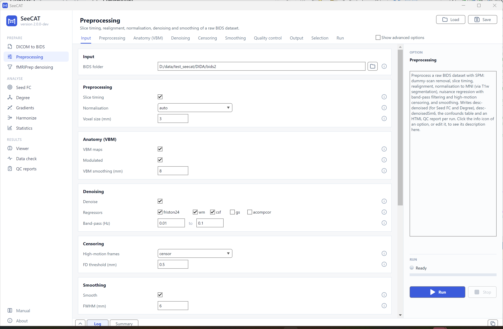
4.1 布局
- 页面（左侧），分三组：PREPARE（Import to BIDS、Preprocessing、fMRIPrep denoising）、ANALYSE（Seed FC、Degree、Gradients、Harmonize、Statistics）和 RESULTS（Viewer、Data check、QC reports）。Manual 打开本手册，About 显示版本。
- 选项（中间），分为 Input、Preprocessing、Denoising 等卡片。上方标签跳到对应卡片。勾选 Show advanced options 显示大多数研究保持默认值的高级选项。
- 说明（右侧）：点击选项的 i 图标或编辑该选项，即显示它的作用、示例、默认值和批处理字段名。鼠标停在选项上会显示简短提示。
- 运行面板（右下）：Run、Stop、各单元的进度和状态（Ready、Running、Finished、Failed）。
- 抽屉（底部）：上次运行的日志（Log）和汇总表（Summary）；箭头按钮展开或收起。
- Load 和 Save（右上）：以 JSON 读写本页的配置。在这里保存的配置可直接用
seecat.run运行。
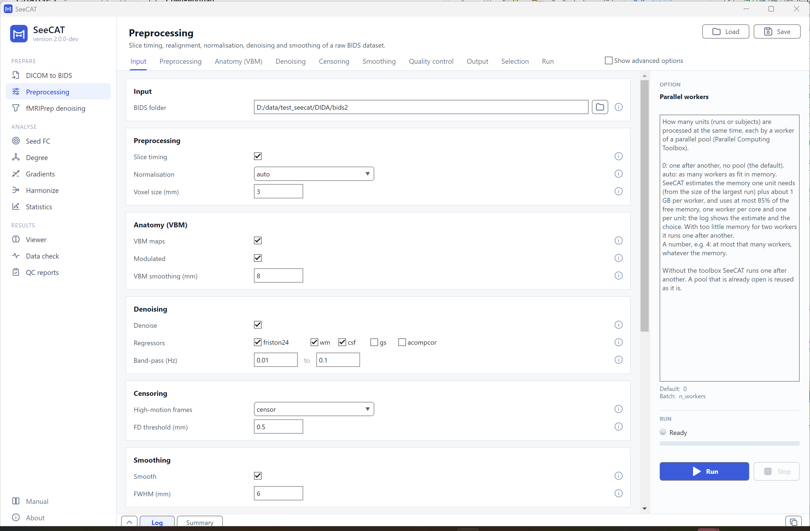
4.2 运行
点击 Run 时先检查所有选项，一次列出全部问题（必填文件夹为空、数值超出范围等）。随后流程在另一个 MATLAB 进程中运行：窗口仍可使用，日志实时显示在抽屉中，Stop 终止该进程（已完成的单元保留结果；被中断的单元下次继续）。运行结束后，抽屉的 Summary 标签显示本次的汇总表（每个单元一行，与 reports/<pipeline>_<时间>_summary.tsv 相同）；每个单元的日志在 logs/<pipeline>_<时间>/ 中。
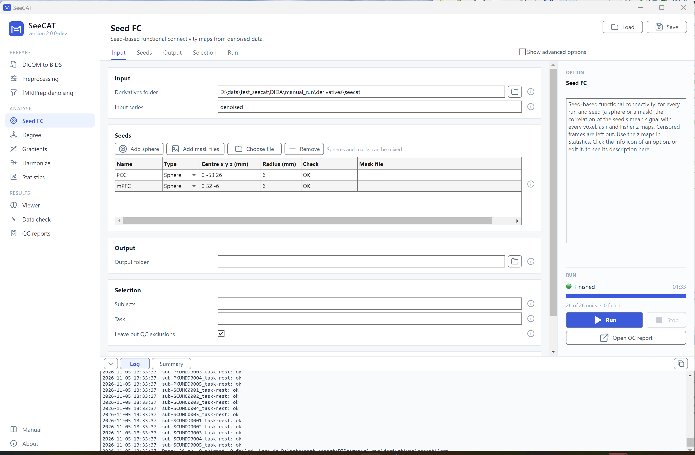
4.3 输入框的类型
| 类型 | 填写方法 |
|---|---|
| 文件夹、文件 | 输入路径，或用文件夹按钮选择。 |
| 数字 | 一个数字，或用空格分隔的几个数字（如 6 6 8）。部分选项接受 auto。 |
| 范围 | 两个数字（如带通 0.01 到 0.1）；两个都留空表示关闭该步骤。 |
| 标签列表 | 逗号分隔，如被试 01, 02, 15。 |
| 勾选框和下拉框 | 开关和选项。 |
| Mask | 灰质、全脑，或带文件按钮的 Mask 文件。 |
| 带 On 的数字 | 可以关闭的数值，如度中心性图的平滑。 |
| 被试图（Maps） | 固定的几个字段（Map、Statistic、Suffix、Space、Task、Other），按文件名选择被试图；下拉列表给出文件夹中已有的值，下方一行显示匹配到的图数。 |
| 表格 | 种子点（Seed FC）和对比（Statistics），用按钮添加和删除行。 |
5 整体工作流程
使用 fMRIPrep 的用户从 fMRIPrep denoising 开始，代替 Preprocessing；之后的步骤完全相同。各步骤的输入输出如下：
| 步骤 | 读取 | 写出 |
|---|---|---|
| Import to BIDS | DICOM 或 NIfTI 文件夹 | BIDS 数据集：sub-*/anat、sub-*/func、participants.tsv |
| Data check | BIDS 数据集或 derivatives | 不写文件（屏幕上的表格） |
| Preprocessing | BIDS 数据集 | derivatives/seecat：预处理、去噪和平滑后的 BOLD，mask，混杂变量，T1 组织图，VBM 图，QC 报告，剔除列表 |
| fMRIPrep denoising | derivatives/fmriprep | derivatives/seecat，同上但没有结构像输出 |
| QC reports | reports/qc_exclusions.tsv | 同一列表，加上你的决定 |
| Seed FC、Degree、Gradients | derivatives/seecat 中去噪后的 BOLD | 写在各 run 旁边的被试图；Gradients 另写 group/gradients… |
| Harmonize | 被试图、participants.tsv | 写在原图旁边的校正后图（desc-…ComBat） |
| Statistics | 被试图、participants.tsv | group/<name>/：统计图、阈值化图、团块表 |
| Viewer | 任意 NIfTI | 图片、阈值化后的图 |
默认情况下每一步都写到同一个 derivatives/seecat 文件夹，下一步直接在那里找到输入：derivatives 文件夹设一次，Output folder 留空即可。
6 各模块详解
本章每节介绍一个页面：用途、原理、全部选项（表格由软件本身生成，与窗口中的选项完全一致）、读写的文件，以及脚本用法。标有 高级 的选项需勾选 Show advanced options 后才显示。多个页面共用的选项（去噪、剔除、质量控制、输出、选择、运行）集中在 6.12 至 6.15 节介绍。
6.1 Import to BIDS
把现有数据整理成 BIDS 数据集。源文件夹可以是 DICOM 文件，用内置的 dcm2niix 转换；也可以是 NIfTI 图像，按原样整理。NIfTI 图像可以是扫描仪或影像平台导出的带 .json 说明文件的数据，也可以是没有说明文件的旧 .nii、.nii.gz 或 .img 数据。SeeCAT 自动识别被试、扫描次数和图像，为每张图像拟定 BIDS 名称；写入任何文件之前，都可以先修改这些名称。源文件夹只读不改。
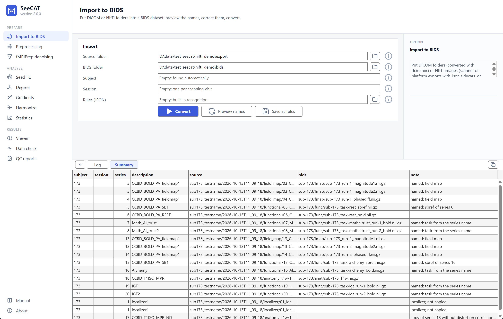
使用步骤
- 填写 Source folder（源文件夹）和 BIDS folder（目标文件夹）。BIDS 文件夹必须在源文件夹之外。Subject、Session 和 Rules 先留空。
- 点击 Preview names，不写任何文件。Log 显示识别出的目录结构（例如 subjects from folder names at level 1 (e.g. sub173_zhangsan → sub-173)）。Summary 表格每张图像一行，列出被试、session、序列号、序列描述、来源路径、拟定的
bids名称和说明：如何命名的，或为何不整理。 - 检查
bids列。要改名，直接修改路径；要不整理某张图像，清空它。单带参考像（sbref）会随所属的 BOLD run 一起改名，run 被清空时它也一并去掉。 - 点击 Convert，按表格当前内容整理。
- 点击 Save as rules，把核对过的名称存为规则文件并填入 Rules。之后 Preview 和 Convert 会对每个被试按同样的方式命名，可以用它整理整个研究的数据。
如何识别被试、session 和图像
- DICOM 还是 NIfTI。文件夹下（
derivatives之外）有 NIfTI 图像时按 NIfTI 整理，否则转换其中的 DICOM 文件。 - 被试（NIfTI）。SeeCAT 依次尝试：
sub-<label>文件夹。- 名称都像编号的最浅一级文件夹。这类名称含数字，且不是日期、session 名称，也不是
07_rest这样的序列文件夹。这一条覆盖每个被试一个文件夹（S001/…）、先按模态再按被试（FunRaw/S001、T1Raw/S001），以及按扫描次数和序列导出的结构（sub173_zhangsan/2026-10-13T11_09_18/functional/07_…）。 - 文件名开头的编号（
S01_rest.nii）。 - 说明文件中的 PatientID。
- 源文件夹本身的名称。
sub173_zhangsan→173，S_001→S001）。其他结构可以用'subject_pattern'指定一个含一个捕获组的正则表达式，例如'Subj_(\d+)'。 - 被试（DICOM）。SeeCAT 读取每个含 DICOM 文件的文件夹中第一个和最后一个文件。PatientID 相同的文件夹属于同一被试，被试名取自包含此人全部文件夹、且不含他人文件夹的那一级。PatientID 缺失或已匿名化时按目录树判断。一个文件夹的第一个和最后一个文件属于不同的人时报错。
- Session。名为
ses-<label>、pre、post、baseline、followup、visit1、v1、t1等的文件夹直接给出 session。否则按扫描次数分组，依据是说明文件或头信息中的 study，或日期文件夹。只扫描一次的被试不设 session 文件夹；多次扫描按日期依次为ses-1、ses-2……，对应关系保存在code/seecat/from_dicom_sessions.tsv，以后新的扫描得到下一个编号。 - 命名。第一条匹配的规则给图像命名（见下文的 Rules）。默认规则把三维 T1 加权像（MPRAGE、SPGR、BRAVO 等）命名为
anat/…_T1w，把静息态 BOLD（序列名含 rest、rsfMRI 或独立的 RS）命名为…_task-rest_bold。没有规则命名的图像按以下方式识别：- 任务态 BOLD：二维 EPI，至少 20 帧。任务名取自去掉末尾编号的序列名，末尾编号作为 run：
Math_AI_trust3→task-mathaitrust_run-3。BOLD、EPI、MB 等扫描术语不进入任务名。 - 场图：序列名含 fieldmap、fmap、B0 map、topup 或 SE-EPI。梯度回波场图命名为
magnitude1、magnitude2和phasediff，并由两张幅值图写入EchoTime1、EchoTime2。自旋回波 EPI 场图命名为epi，dir-AP、PA等取自序列名或相位编码方向。 - 单带参考像（SBRef、
…_SB1，单个体积）：命名为同一次扫描中紧随其后、层面网格相同的 BOLD run 的sbref。 - 弥散像：带 .bval/.bvec 的图像命名为
dwi。 - 不整理（原因写在说明中）：定位像、相位图和衍生图像；以及 T1 未做畸变校正的副本（ImageType 含 ND），前提是校正后的那份也在。其他图像只列出，不复制。
- 任务态 BOLD：二维 EPI，至少 20 帧。任务名取自去掉末尾编号的序列名，末尾编号作为 run：
- Run、echo 和 IntendedFor。同一 session 中名称相同的多个序列按序列号依次为
run-1、run-2……；同一序列的多个回波为echo-1等。一组场图供它之后、下一组场图之前采集的 BOLD run（及其 sbref）使用，这些 run 以bids::路径写入场图的IntendedFor。 - 没有说明文件的图像：序列描述取自文件夹和文件名，帧数和 TR 取自图像头。图像头中没有 TR 时，用
'tr'选项给出。同一文件夹中带编号的三维图像（f0001.nii、f0002.nii……，不少于十个），只有文件名末尾的编号不同时，视为一个 run，写成一个四维图像。S01_rest_0001.nii与S02_rest_0001.nii、run1_vol0001.nii与run2_vol0001.nii属于不同的 run。编号不连续，或图像的网格、方向、TR 不一致时不合并，并给出警告说明原因；此时请把每个 run 的图像放到单独的文件夹，或先合成四维图像。Analyze 格式的 .img/.hdr 写成 NIfTI。 - 写出。
- 图像以 .nii.gz 及其说明文件写到
sub-<label>/[ses-<label>/]anat|func|fmap|dwi。 - 说明文件复制时去掉姓名、ID、出生日期等可识别个人身份的字段。保留下来的文本字段（SeriesDescription、ProtocolName 及嵌套字段）和无说明文件图像的描述中，也会去掉被试姓名。姓名的来源有三处：PatientName；被试文件夹名中编号后面的词（
sub173_zhangsan）；文件名开头编号后面、其他被试的文件中都没有的词（sub173_zhangsan_rest.nii与sub174_lisi_rest.nii并存时）。这样的文件名词也可能是任务名（S01_memory_bold.nii与S02_motor_bold.nii并存时）：它同样不会写入数据集；若没有其他词能给出任务名，该 run 命名为task-unknown，说明栏显示 task not known，不会猜成 rest。请在转换前于bids列填写任务名。其他写法的姓名（zhangsan_173，或与其他词连写）无法识别，其他自由文本也原样保留，共享数据集前请检查报告和说明文件。participants.tsv 加入该被试；说明文件中有相应信息时，同时写入sex和扫描时的age。 - 缺少
dataset_description.json时会写出。 - 已在数据集中的图像保留，因此重新整理只补充缺少的部分。
- 每张图像的去向记录在
code/seecat/from_nifti_sub-<label>.tsv（DICOM 为from_dicom_…）。表中被试文件夹或文件名开头的编号显示为sub-<label>，按上述方式识别出的姓名不出现在路径和描述中。原始路径只出现在窗口 Preview names 的表格和seecat.bids.from_nifti返回的表中，不写入数据集。
- 图像以 .nii.gz 及其说明文件写到
选项
| 选项 | 批处理 | 默认 | 含义 |
|---|---|---|---|
| Source folder | from_nifti(src, bids_dir)、from_dicom(src, bids_dir) | （必填） | DICOM 文件或 NIfTI 图像所在文件夹，可以是上述任何结构：一个被试，或包含多个被试的文件夹。 |
| BIDS folder | bids_dir | （必填） | 要写入的 BIDS 数据集，须在源文件夹之外；不存在时自动创建。 |
| Subject | 'sub', '01' | 空 | 填写：源文件夹中的全部数据都属于该被试。留空：按上述方法自动识别。 |
| Session | 'ses', 'pre' | 空 | 填写：所有图像放入该 session。留空：取自 session 文件夹；没有时，一次扫描不设 session，多次扫描为 ses-1、ses-2 …… |
| Rules (JSON) | 'rules', 'my_rules.json' | 空 | 命名规则的 JSON 列表（由 Save as rules 生成，或手写）。留空：使用上述内置识别。 |
脚本中还有以下选项：
'dryrun', true：只返回整理计划，不写文件。'names', P：使用修改过的计划（表格或 TSV 文件）。'auto', false：只按规则命名。'tr', 2：为没有 TR 的 BOLD 指定 TR。'link', true：同一磁盘上的 .nii.gz 图像用硬链接代替复制，节省空间，但数据集与导出数据共用这些文件。'subject_pattern'：用正则表达式从路径中取出被试标签。
每条规则用正则表达式（不区分大小写）匹配说明文件字段，给出 datatype、suffix 和实体；或用 "skip": true 表示不整理。除说明文件字段外，还可以匹配 Path（图像在源文件夹中的位置）和 Volumes（帧数）。第一条匹配的规则生效。
[{"match": {"SeriesDescription": "^IGT\\d*$"}, "datatype": "func", "suffix": "bold", "entities": {"task": "gambling"}},
{"match": {"SeriesDescription": "^Alchemy$"}, "skip": true},
{"match": {"Path": "^FunRaw/"}, "datatype": "func", "suffix": "bold", "entities": {"task": "rest"}},
{"match": {"SeriesDescription": "mprage|t1"}, "datatype": "anat", "suffix": "T1w"}]脚本
P = seecat.bids.from_nifti('D:/study/export', 'D:/study/bids', 'dryrun', true); % 整理计划
P.bids{strcmp(P.description, 'IGT1')} = 'sub-173/func/sub-173_task-gambling_run-1_bold.nii.gz';
T = seecat.bids.from_nifti('D:/study/export', 'D:/study/bids', 'names', P); % 按修改后的计划整理
seecat.bids.plan_rules(P, 'D:/study/bids_rules.json'); % 存为规则，用于其他被试
T = seecat.bids.from_nifti('D:/study/export2', 'D:/study/bids', 'rules', 'D:/study/bids_rules.json');
S = seecat.bids.from_dicom('D:/study/dicom', 'D:/study/bids'); % DICOM，全部被试6.2 Data check
预处理之前，先看看数据集里有什么。Data check 列出 BIDS 数据集（或 derivatives 文件夹）中每个 BOLD run 的帧数和 TR；如果有混杂变量表（预处理或 fMRIPrep 之后），还给出平均和最大帧间位移，以及被标记为高头动的帧。平均 FD 超过 0.25 mm 或超过 20% 的帧被标记的 run 会高亮显示。Open in viewer 逐帧查看所选 run 及其头动曲线；QC report 打开它的质量报告。
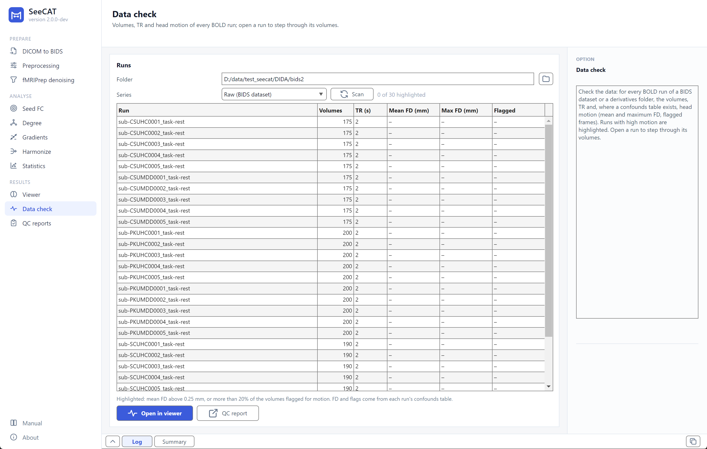
Series 下拉框选择列出哪类图像：预处理后（desc-preproc）、去噪后、原始（BIDS 数据集）或全部 BOLD 图像。脚本：R = seecat.qc.runs('D:/study/bids', 'raw')。
6.3 Preprocessing
用 SPM 预处理 BIDS 数据集中的每个 BOLD run，把可直接分析的数据写到 derivatives/seecat。每个 run 是一个单元；它的 T1 像（有 session 时优先同一 session）用于配准和分割。
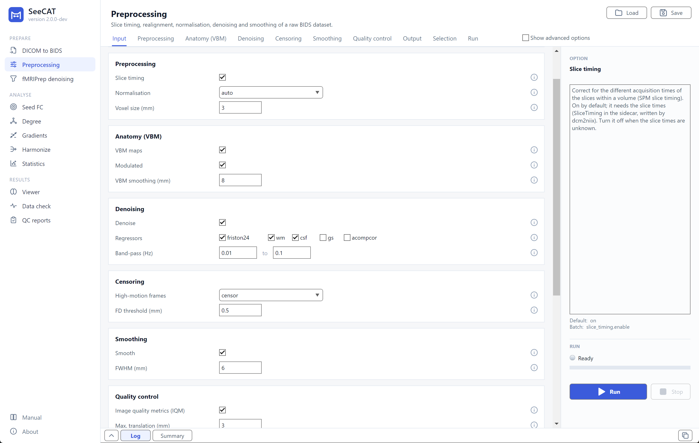
处理步骤
- 输入。把 run 和它的 T1 复制到工作文件夹，并去掉开头信号未稳定的帧：
dummy_scans = auto时，在前 20 帧中，全脑平均信号相对整个 run 的中位数和 MAD 为稳健离群值（z > 3.5）的开头连续帧被去掉；扫描仪已丢弃的帧不会重复计算。 - 层间时间校正（SPM）。各层采集时间取自 sidecar 中的
SliceTiming（秒），因此顺序、隔层和多带采集都能正确处理；除非另行设置，参考时刻为 TR 的中点。层时间按SliceEncodingDirection解读（缺省为k；k-会反转为体素顺序）。层沿第一或第二体素轴（i、j）的数据不受支持，运行会报错停止；请先调整图像方向，或关闭层间时间校正。 - 头动校正（SPM）。两轮：先对齐到第一帧，再对齐到平均像。六个头动参数写入混杂变量表；数据在这一步不重采样。
- 配准。用归一化互信息把 T1 配准到平均 EPI（只修改其头信息）。
- 分割。用 SPM 组织概率图对 T1 做统一分割，得到个体空间的灰质、白质、脑脊液图，偏场校正后的 T1，以及到 IXI549Space 的形变场。没有 T1 时（
normalise.method = epi）改为分割平均 EPI。 - 干扰信号 mask。在被试自身空间中取白质（p > 0.99）和脑脊液（p > 0.95）mask，用 2 mm 的球腐蚀，使其远离灰质；再重采样到输出网格。
- 标准化。把形变场一次性应用到 BOLD 数据（4 阶 B 样条，这是数据唯一的一次重采样）和组织图上，按所选体素大小写在 SPM 边界框内。
- 输出空间的 mask：脑 = 灰质 + 白质 + 脑脊液 > 0.5，且每一帧都在视野内。
- 混杂变量。与 fMRIPrep 同名的列：24 个头动回归量（6 个参数及其导数和平方；Friston 1996），帧间位移（Power 2012），全脑（
global_signal）、白质和脑脊液的平均信号，白质和脑脊液的 aCompCor 成分（在好的帧上计算），每个被标记的帧一个motion_outlier_XX列，以及censor列。 - IQM（可选，默认开启）：原始 BOLD 和 T1 的 MRIQC 图像质量指标，见 6.5 节。
- 去噪。每个体素一个线性模型：多项式趋势（1 阶）加上所选回归量，数据和回归量用同一个滤波器带通，在好的帧上拟合。高头动帧先用好的帧插值填补（频谱插值），避免滤波把尖峰扩散出去；拟合时不使用它们，并为后续步骤做标记。最后把体素均值加回。输出：
desc-denoised。 - 平滑（可选）：所选 FWHM 的高斯核；输出
desc-denoisedSm6。未平滑的序列保留。 - 写出结果，并为每个 run 生成 QC 报告；全部 run 完成后生成组报告和剔除列表。
输入选项
| 选项（界面） | 批处理字段 | 默认值 | 含义与设置建议 |
|---|---|---|---|
| BIDS 文件夹 BIDS folder | bids_dir | （空） | 原始 BIDS 数据集，如 D:/study/bids，内含 sub-<label>/anat/*_T1w.nii.gz、sub-<label>/func/*_bold.nii.gz 及其 JSON 说明文件（Import to BIDS 写出的就是这种结构）。 未设置 Output folder 时，结果写到 <BIDS 文件夹>/derivatives/seecat。建议先用 Data check 查看各 run 的帧数、TR 和头动。 填好文件夹后，其下方显示其中 BOLD run 的被试、session 和任务。 |
| 去除前几帧 Dummy scans 高级 | dummy_scans | auto | 从每个 run 开头去掉的、信号尚未稳定的帧。 auto（默认）：从数据中检测（开头若干帧中，全脑平均信号为离群值的帧）。扫描仪已经丢弃过的不会再算。 |
预处理选项
| 选项（界面） | 批处理字段 | 默认值 | 含义与设置建议 |
|---|---|---|---|
| 层间时间校正 Slice timing | slice_timing.enable | true | 校正同一帧内各层采集时间的差异（SPM slice timing）。默认开启；需要各层采集时间（sidecar 中的 SliceTiming，由 dcm2niix 写出）。不知道层采集时间时请关闭。 |
| 各层采集时间（秒） Slice times (s) 高级 | slice_timing.slice_times | auto | auto（默认）：读取每个 run 的 JSON sidecar 中的 SliceTiming。 |
| 参考时间 Reference time 高级 | slice_timing.ref_time | middle | 所有层对齐到的 TR 内的时刻。 middle（默认）：TR 的一半。 |
| 头动校正 Realign 高级 | realign.enable | true | 把每一帧对齐，校正头动（SPM realign）。六个头动参数和 FD 写入混杂变量表。请保持开启。 |
| 对齐到平均像 Register to mean 高级 | realign.register_to_mean | true | 两轮：先对齐到第一帧，再对齐到对齐后各帧的平均像（SPM 的 register to mean）。更准确，默认开启。 |
| 空间标准化 Normalise 高级 | normalise.enable | true | 把数据变换到 MNI 空间（SPM 的 IXI549Space 模板），使不同被试可以逐体素比较。组分析需要这一步。 |
| 标准化方法 Normalisation | normalise.method | auto | auto（默认）：有 T1 像时用 segment，否则用 epi。
|
| 体素大小（mm） Voxel size (mm) | normalise.voxel_size | 3 | 标准化后数据的体素大小，如 3（默认）或 2。体素越小，占用的磁盘和内存越多（2 mm 的数据量是 3 mm 的 3.4 倍），Degree 也会慢很多。三个数字（如 3 3 4）可给各轴不同大小。 |
| 边界框 Bounding box 高级 | normalise.bounding_box | [-90 -126 -72;90 90 108] | 标准化图像的范围（MNI 毫米），[xmin ymin zmin; xmax ymax zmax]。默认 [-90 -126 -72; 90 90 108]，即 SPM 的边界框，包含全脑和小脑。 |
VBM 选项
| 选项（界面） | 批处理字段 | 默认值 | 含义与设置建议 |
|---|---|---|---|
| VBM 图 VBM maps | vbm.enable | false | 同时输出 T1 分割得到的灰质、白质（和脑脊液）图，并标准化到 MNI（IXI549Space，1.5 mm，SPM 的输出方式），用于在 Statistics 页做基于体素的形态学分析（Map 选 modulatedSm8，Suffix 选 probseg）。只对有 T1 的 run 生效；每个 T1 只写一次。 各组织体积（GM、WM、CSF、TIV，单位 mL）总会写出（reports/anat_volumes.tsv）；Statistics 和 Harmonize 可直接把 tiv_ml 当协变量使用，无需加入 participants.tsv。这里用的是 SPM 统一分割，不含 DARTEL。 |
| 调制 Modulated | vbm.modulated | true | 勾选（默认）：输出调制图（desc-modulated），按形变的雅可比行列式缩放，保留组织的总量；这是常用的 VBM 输入，分析时以 TIV 为协变量。 |
| VBM 平滑（mm） VBM smoothing (mm) | vbm.fwhm | 8 | 平滑副本的 FWHM（默认 8 mm，文件为 desc-modulatedSm8）；填 0 不写平滑副本。VBM 常用 6–10 mm。 |
干扰信号 mask 选项
| 选项（界面） | 批处理字段 | 默认值 | 含义与设置建议 |
|---|---|---|---|
| 白质概率阈值 WM probability 高级 | masks.wm_threshold | 0.99 | 白质回归量（及 aCompCor）所用的白质 mask：分割得到的白质概率高于此值的体素（默认 0.99），再做腐蚀。严格的 mask 可避免把灰质信号混入干扰信号。 |
| 脑脊液概率阈值 CSF probability 高级 | masks.csf_threshold | 0.95 | 脑脊液回归量所用的 mask：脑脊液概率高于此值（默认 0.95；用 0.99 再腐蚀后，小脑室可能一个体素都不剩），再做腐蚀。 |
| 腐蚀半径（mm） Erosion (mm) 高级 | masks.erode_mm | 2 | 在被试自身空间中，用此半径的球把白质和脑脊液 mask 向内缩（默认 2 mm），使其远离灰质。0：不腐蚀。 |
去噪、剔除、平滑和质量控制选项见 6.12、6.13 节；输出、选择和运行选项见 6.15 节。
输出文件
derivatives/seecat/
dataset_description.json
sub-01/
anat/ sub-01_desc-preproc_T1w.nii 偏场校正后的 T1（已配准到 EPI）
sub-01_label-GM|WM|CSF_probseg.nii 个体空间组织图（sidecar 中有各组织体积 mL 和 TIV）
sub-01_from-T1w_to-IXI549Space_mode-image_xfm.nii 形变场
sub-01_space-IXI549Space_res-1p5_label-GM_desc-modulated_probseg.nii VBM（vbm.enable）
sub-01_space-IXI549Space_res-1p5_label-GM_desc-modulatedSm8_probseg.nii VBM，平滑后
func/ sub-01_task-rest_space-IXI549Space_res-3_desc-preproc_bold.nii 标准化后、未去噪
sub-01_task-rest_space-IXI549Space_res-3_desc-denoised_bold.nii Seed FC、Degree、Gradients 的输入
sub-01_task-rest_space-IXI549Space_res-3_desc-denoisedSm6_bold.nii 平滑副本
sub-01_task-rest_space-IXI549Space_res-3_desc-brain_mask.nii
sub-01_task-rest_desc-confounds_timeseries.tsv（及 .json）
sub-01_task-rest_desc-qc_report.html、sub-01_task-rest_desc-qc_metrics.json、figures/
reports/ prep_qc.html、prep_qc.tsv、qc_exclusions.tsv、anat_volumes.tsv、prep_<时间>_summary.tsv
logs/输入是压缩格式时输出为 .nii.gz，否则为 .nii。工作文件位于输出文件夹旁的 seecat_work，单元成功后删除（除非勾选 Keep work files）。
6.4 fMRIPrep denoising
用于已经过 fMRIPrep 预处理的数据。对所选空间中的每个 BOLD run，读取 *_desc-preproc_bold、它的脑 mask 和混杂变量表，去掉 fMRIPrep 标记的非稳态帧，用 SeeCAT 自己的规则替换 fMRIPrep 的头动离群列（所有输入使用同一个 FD 规则），然后按与 Preprocessing 完全相同的方式去噪、剔除和平滑。输出文件名也相同，因此 Seed FC、Degree、Gradients 和 Statistics 的用法不变。这里不计算 IQM（fMRIPrep 的输出中没有原始数据）；头动、覆盖率和配准检查照常进行（如果存在 fMRIPrep 在输出空间的组织图，配准检查会使用它们）。
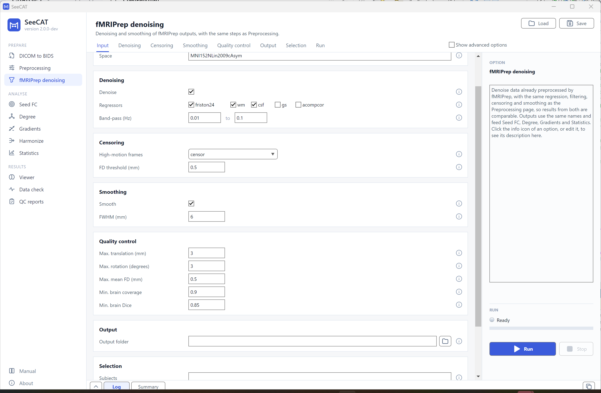
| 选项（界面） | 批处理字段 | 默认值 | 含义与设置建议 |
|---|---|---|---|
| fMRIPrep 文件夹 fMRIPrep folder | fmriprep_dir | （空） | fMRIPrep 的输出文件夹，如 D:/study/bids/derivatives/fmriprep。SeeCAT 为每个 BOLD run 读取 *_space-<space>_desc-preproc_bold.nii.gz、它的脑 mask 和混杂变量表；不重复 fMRIPrep 自己的步骤。 未设置 Output folder 时，结果写到它旁边的 derivatives/seecat，文件名与 Preprocessing 页相同，因此 Seed FC、Degree 和 Statistics 的用法完全一样。 填好文件夹后，其下方显示其中各 run 的被试、session 和任务。 |
| 空间 Space | space | MNI152NLin2009cAsym | 要去噪的 fMRIPrep 输出空间，即文件名中的 space-<label>。默认 MNI152NLin2009cAsym。组分析需要模板空间，不能用 T1w 或 fsnative。 |
| 分辨率标签 Resolution label 高级 | res | （空） | 文件的 res-<label>，如 2；仅当 fMRIPrep 在同一空间写出了多种分辨率时需要。留空：唯一的那种分辨率。 |
| 去除前几帧 Dummy scans 高级 | dummy_scans | auto | 从每个 run 开头去掉的帧。 auto（默认）：fMRIPrep 标记为非稳态的帧（non_steady_state_outlier 列）。 |
aCompCor 取 fMRIPrep 混杂表中前 n 个 c_comp_cor/w_comp_cor 列；较早版本的 fMRIPrep 只写出 a_comp_cor_*，此时需要在配置文件中按列名列出（denoise.regressors）。
6.5 质量控制
质量控制在 Preprocessing 和 fMRIPrep denoising 中自动完成；QC reports 页用于查看结果并决定使用哪些 run。
单个 run 的报告
每个 run 有一个 sub-*/…_desc-qc_report.html，内容包括：
- 概要：帧数、去掉的帧、平均和最大 FD、被标记的帧、保留的分钟数、tSNR、去噪前后 FD 与 DVARS 的相关（去噪效果好时接近 0）、最大平动和转动、覆盖率；
- 头动：FD 随时间的变化（标出阈值和被标记的帧）、平动和转动曲线；
- 去噪前后的 DVARS；
- 去噪前后的 carpet 图（Power 2017），体素按灰质、白质、脑脊液排列；
- 配准与覆盖：叠加模板灰质轮廓和脑 mask 的标准化平均 EPI，以及配准指标；
- 用于提取干扰信号的白质和脑脊液 mask；
- 图像质量指标（MRIQC）。
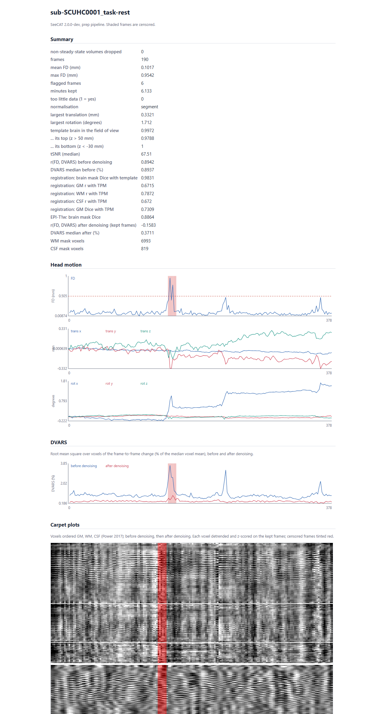
图像质量指标（IQM）
开启 qc.iqm（默认）时，Preprocessing 复用自己的分割、头动校正和配准结果，在原始数据上计算 MRIQC（Esteban et al. 2017）的指标：BOLD 用去掉前几帧、经头动校正、未做层间时间校正的 run；T1 用其偏场校正图和个体空间组织图。基于公式的指标与 MRIQC 自身函数在相同输入上的结果一致；头部、空气和脑区 mask 由 SeeCAT 自己生成，因此绝对值可能与实际运行 MRIQC 的结果有出入。请在同一数据集、同一中心内比较各 run。
| BOLD 指标 | 含义 | 越…越好 |
|---|---|---|
bold_tsnr | 脑内时间信噪比的中位数（时间均值 / 时间标准差） | 高 |
bold_snr | 平均 EPI 在脑内的信噪比 | 高 |
bold_fber | 前景（脑）与背景的能量比 | 高 |
bold_efc | 熵聚焦准则：反映鬼影和模糊 | 低 |
bold_gsr_x、bold_gsr_y | 沿 x、y 方向的鬼影信号比（y 通常为相位编码方向） | 低 |
bold_dvars_std、_nstd、_vstd | 标准化、原始和逐体素标准化的 DVARS（Nichols 2013）；标准化的接近 1 为好 | 低 |
bold_fd_mean、fd_num、fd_perc | 平均 FD，FD > 0.2 mm 的帧数和百分比 | 低 |
bold_aor | AFNI 离群比例：每帧离群体素比例的均值 | 低 |
bold_aqi | AFNI 质量指数：每帧与中位帧的 1 − Spearman 相关的均值 | 低 |
bold_gcor | 全局相关：所有体素对的平均相关 | 低 |
bold_fwhm_* | 以体素为单位的平滑度 | – |
| T1 指标 | 含义 | 越…越好 |
|---|---|---|
t1_cnr | 灰质–白质对比噪声比 | 高 |
t1_cjv | 灰质和白质的联合变异系数（Ganzetti et al. 2016） | 低 |
t1_snr_* | 脑脊液、灰质、白质及其平均的信噪比 | 高 |
t1_snrd_* | Dietrich 信噪比，噪声取自头部周围的空气 | 高 |
t1_efc、t1_fber | 熵聚焦准则；前景与背景能量比 | 低；高 |
t1_inu_med、t1_inu_range | 脑内偏场的中位数和范围（第 95 与第 5 百分位之差） | 范围越小越好 |
t1_wm2max | 白质中位数与图像第 99.95 百分位之比；通常约 0.6–0.8 | – |
t1_icvs_*、t1_rpve_* | 各组织体积分数；残余部分容积 | – |
t1_tiv_ml、t1_gm_ml 等 | 颅内总体积和各组织体积（mL） | – |
配准指标
| 指标 | 检查什么 | 典型值（实例数据集） |
|---|---|---|
reg_brain_dice | run 的脑 mask 与模板脑 mask 的 Dice：标准化的整体对齐 | 0.95–0.98 |
reg_gm_corr、reg_wm_corr、reg_csf_corr | 标准化后组织图与 SPM TPM 的空间相关 | 灰质 0.64–0.74，白质 0.79–0.83 |
reg_gm_dice | 灰质 > 0.5 与 TPM 灰质 > 0.5 的 Dice | 0.70–0.75 |
reg_epi_t1_dice | 由平均 EPI 自身信号强度（高于其第 98 百分位的 20%）得到的脑区与 T1 脑区的 Dice：EPI 与 T1 是否对齐 | 0.85–0.92 |
覆盖率
每一帧都在视野内的模板脑比例，包括总体，以及分别计算的脑顶部（z > 50 mm）和底部（z < −30 mm：小脑和颞极）。覆盖率低说明部分脑区没有扫到。
剔除规则与警告
所有 run 完成后，组报告（reports/prep_qc.html）写出 reports/qc_exclusions.tsv。满足以下任一条件的 run 建议剔除：
| 规则 | 选项 | 默认 |
|---|---|---|
| 最大绝对平动 | qc.max_translation | 3 mm |
| 最大绝对转动 | qc.max_rotation | 3° |
| 平均帧间位移 | qc.max_mean_fd | 0.5 mm |
| 剔除高头动帧后有效数据太少 | censor.min_minutes | 5 分钟 |
| 模板脑覆盖率 | qc.min_coverage | 0.9 |
| 与模板的脑区 Dice（标准化失败） | qc.min_brain_dice | 0.85 |
以下只给警告、不剔除：平均 FD 超过 0.25 mm；脑底部覆盖率低于 80%；某个 IQM 或配准指标在本中心内的稳健 z 值（距中位数多少个 MAD）朝坏的方向超过 3。中心取自 participants.tsv 的 site 列；没有该列，或某中心少于 5 个 run 时，以整个数据集为参照。T1 像单独一行，只有警告。
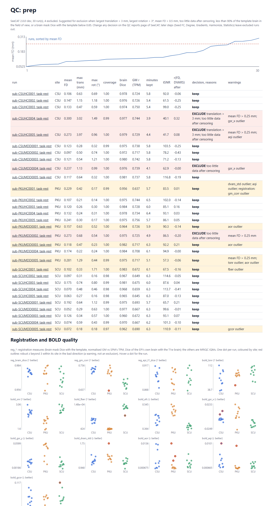
QC reports 页
选择 derivatives 文件夹后，表格列出每个 run 和 T1 像，及其中心、平均 FD、最大平动和转动、覆盖率、脑区 Dice、灰质与 TPM 的相关、保留的分钟数、tSNR、T1 CNR、剔除原因和警告。勾选或取消 Exclude，填写 Note，再点 Save decisions。你修改过的行标记为你的决定，重新运行预处理后仍会保留。Group report 和 Run report 打开对应的 HTML 报告。
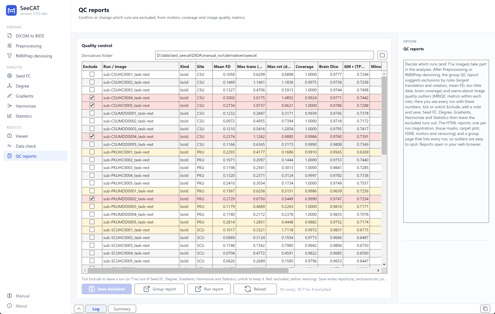
剔除列表是一个普通表格：
id kind exclude reasons warnings decision note
sub-PKUHC0001_task-rest bold 1 mean FD > 0.5 mm auto
sub-SCUMDD0003_task-rest bold 0 mean FD > 0.25 mm user checked carpet plot
sub-CSUHC0002_T1w T1w 0 cnr outlier auto后续步骤按标识一次采集的实体（sub、ses、task、acq、ce、rec、dir、run、echo）把文件与该列表对应起来，因此由被剔除 run 得到的所有图，以及被剔除 T1 的 VBM 图，都不会参与分析。修改列表不会让已完成的单元重新计算。
6.6 Seed FC
基于种子点的功能连接。对每个 run 和每个种子点，计算种子点体素（脑 mask 内，使用剔除后保留的帧）的平均信号与每个体素的相关，写出 Pearson r 图和 Fisher z 图（z = atanh r）。Harmonize 和 Statistics 请使用 z 图。
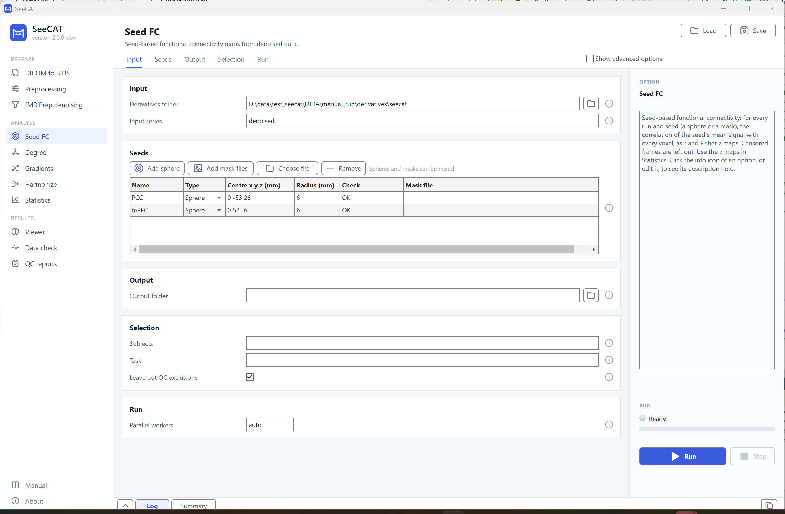
种子点
- 球形：MNI 毫米坐标的中心（
x y z）和半径；中心周围半径内的体素。例：PCC0 -53 26，mPFC0 52 -6，左侧运动皮层-38 -22 56。 - Mask：MNI 空间的 NIfTI 图像（任意体素大小，大于 0 的体素即种子点），以最近邻方式重采样到数据。Add mask files 为每个选中的文件添加一行，并以文件名命名。
名称只能是字母和数字，会成为输出图的 desc。
| 选项（界面） | 批处理字段 | 默认值 | 含义与设置建议 |
|---|---|---|---|
| Derivatives 文件夹 Derivatives folder | input_dir | （空） | Preprocessing 或 fMRIPrep 页写出的 SeeCAT derivatives 文件夹，如 D:/study/bids/derivatives/seecat。其中每个 run 有去噪后的 BOLD、脑 mask 和标记了剔除帧的混杂变量表。 结果图写在各 run 旁边（desc-<seed>_stat-r 和 stat-z）；未设置 Output folder 时就在同一文件夹。 |
| 输入序列 Input series | input | denoised | 每个 run 使用哪个序列：文件名中的 desc 标签。 denoised（默认）：去噪、带通、未平滑。种子点信号只来自种子点自身的体素。 |
| 空间 Space 高级 | space | （空） | 仅当 derivatives 中的 run 有多个空间时需要。留空：唯一的那个空间。 |
| 分辨率标签 Resolution label 高级 | res | （空） | 文件的 res-<label>，如 2；仅当衍生数据中同一批 run 有多种分辨率时需要（如 fMRIPrep 的 res-1 和 res-2）。留空：唯一的那种分辨率。 |
| 种子点 Seeds | seeds | （空） | 每行一个种子点；球形和 mask 可以混合。对每个 run 和种子点，计算种子点体素（脑 mask 内，去掉剔除帧）的平均信号与每个体素的相关：得到 r 图和 Fisher z 图（desc-<name>_stat-z，统计时使用这个）。 球形：MNI 毫米坐标的中心 "x y z" 和半径（mm），如 PCC：0 -53 26，半径 6；mPFC：0 52 -6；左侧运动皮层：-38 -22 56。 Add sphere 添加一行；Add mask files 为每个选中的文件添加一行，并以文件名命名；Choose file 设置所选行的文件；Remove 删除所选行。名称只能是字母和数字，也是输出图的名称。Check 列显示某行还缺什么。 |
输出文件
sub-01/func/sub-01_task-rest_space-IXI549Space_res-3_desc-PCC_stat-r_connectivity.nii.gz（及 .json）
sub-01/func/sub-01_task-rest_space-IXI549Space_res-3_desc-PCC_stat-z_connectivity.nii.gz（及 .json）sidecar 记录种子点（中心和半径，或文件）、输入序列和使用的帧。
cfg = seecat.config('fc');
cfg.input_dir = 'D:/study/bids/derivatives/seecat';
cfg.seeds = struct('name', {'PCC', 'Amygdala'}, 'center', {[0 -53 26], []}, ...
'radius', {6, []}, 'file', {'', 'D:/masks/amygdala_L.nii'});
seecat.run(cfg);6.7 Degree
体素水平的度中心性。mask 中的每个体素都是该 run 相关网络（使用剔除后保留的帧）的一个节点。体素的二值度是相关达到阈值的连接数；加权度（强度）是这些连接 r 值之和。与 SeeCAT 1.0 的定义相同：由 z 分数化后的序列计算相关，按正负规则处理（absolute 取 |r|，negative 取 −r），低于阈值的置 0。可选择忽略短于某距离的连接，或按距离分段（短程和长程度中心性）。结果图以原始值和 mask 内 z 分数两种形式写出，可选再平滑（网络由未平滑的数据构建）。
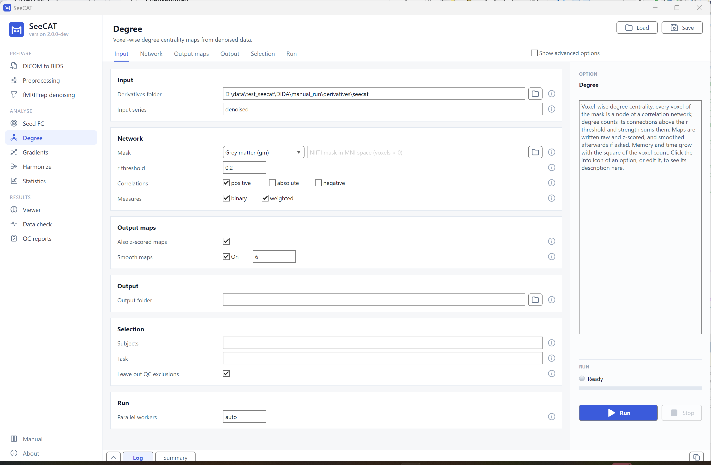
| 选项（界面） | 批处理字段 | 默认值 | 含义与设置建议 |
|---|---|---|---|
| Derivatives 文件夹 Derivatives folder | input_dir | （空） | Preprocessing 或 fMRIPrep 页写出的 SeeCAT derivatives 文件夹，如 D:/study/bids/derivatives/seecat。其中每个 run 有预处理后的 BOLD（*_desc-<input>_bold.nii.gz）、被试脑 mask 和标记了剔除帧的混杂变量表。 度中心性图写在它们旁边；未设置 Output folder 时就在同一文件夹。 |
| 输入序列 Input series | input | denoised | 用每个 run 的哪个序列构建网络：文件名中的 desc 标签。 denoised（默认）：去噪并带通滤波，未平滑。请使用这个：相关前平滑会夸大相邻体素之间的连接。 |
| 空间 Space 高级 | space | （空） | 仅当 derivatives 中的 run 有多个空间时需要，如 fMRIPrep 的 MNI152NLin2009cAsym 和 T1w。留空：唯一的那个空间。 |
| 分辨率标签 Resolution label 高级 | res | （空） | 文件的 res-<label>，如 2；仅当衍生数据中同一批 run 有多种分辨率时需要（如 fMRIPrep 的 res-1 和 res-2）。留空：唯一的那种分辨率。 |
| Mask Mask | mask | gm | 构成网络的体素：mask 中的每个体素是一个节点，与其他所有体素计算相关。 灰质（gm，默认）：SeeCAT 的灰质 mask（SPM TPM 灰质概率 > 0.2），重采样到数据网格，与 SeeCAT 1.0 相同。白质和脑脊液体素会带来噪声连接。 mask 会限制在被试脑 mask 之内，除非掩膜方式选为“按原样使用”。时间和内存随体素数的平方增长：3 mm 时灰质约 5 万个体素，2 mm 时是其 4 倍。 |
| 掩膜方式 Mask mode | mask_mode | run | 上面的 Mask 如何与每个 run 的脑 mask 结合。 在各 run 脑 mask 内（run，默认）：mask 与该 run 自己的脑 mask 取交集，体素数会随视野和分割结果在被试间略有不同。 在组 mask 内（group）：只用位于每个所选 run 脑 mask 内的体素。组 mask 是本页所选 run（被试、task、QC 剔除）脑 mask 的交集，写入输出文件夹的 group/masks/，对应的 .json 列出所用的 run。某个 run 覆盖不全会让所有人的组 mask 变小：请查看 QC 报告，或剔除该 run。增加或去掉 run 会改变组 mask，结果随之重新计算。 按原样使用（given）：使用 mask 的全部体素，不与任何脑 mask 取交集，例如你为整个组制作的 mask；Mask 需选灰质（gm）或 mask 文件。在 run 的脑 mask 或视野之外，去噪后的序列为 0，这些体素没有连接：度为 0，z 标准化图只在有信号的体素上计算。每个 run 的日志给出有多少体素位于其脑 mask 之外；JSON 中有 VoxelsWithSignal。
|
| r 阈值 r threshold | threshold | 0.2 | 相关系数 r（按下面的正负规则处理后）不小于此值时才算一条连接，如 0.2（默认，与 SeeCAT 1.0 相同）、0.25 或 0.3。 阈值越高，保留的连接越少、越强。阈值会出现在输出文件名中，如 desc-degPosBinR0p2。取值范围 0 到小于 1。 |
| 相关方向 Correlations | sign | positive | 哪些相关计入；每个勾选项各自输出一组图。 positive（默认，desc-degPos...）：r ≥ 阈值。常用选择，因为负相关受去噪方法影响（如全局信号回归）。
|
| 指标 Measures | weight | binary, weighted | 对一个体素的连接累加什么；每个勾选项各自输出一组图。 binary = 度（desc-deg...Bin...）：超过阈值的连接数目。 例：一个体素有 r = 0.3、0.5、0.6 三条连接，则度为 3，强度为 1.4。
|
| 排除近距离连接（mm） Exclude within (mm) 高级 | exclude_local_mm | 0 | 距离小于此值的体素之间的连接不计入。相邻体素部分因为数据本身的平滑性而相关，短连接可能主导度中心性。 0（默认）：全部计入。如 20：去掉短于 20 mm 的连接（排除紧邻区域）。 |
| 距离分段（mm） Distance bins (mm) 高级 | distance_edges | [0 Inf] | 按长度把连接分段，每段一张图。给出各段的边界（mm），递增，从 0 或以上开始；Inf 表示没有上限。 [0 Inf]（默认）：一张包含全部连接的图。 长度为 d 的连接属于满足 lo < d ≤ hi 的那一段。 |
| 同时输出 z 分数图 Also z-scored maps | zscore | true | 同时写出在 mask 内 z 分数化的图（减去均值、除以 mask 内体素的标准差），作为 stat-raw 旁边的 stat-z。 原始度值受体素数和每个被试数据质量的影响；z 分数图更便于被试间比较，通常作为组统计的输入。 |
| 平滑结果图 Smooth maps | smooth_fwhm | 6 | 用此 FWHM（mm）的高斯核平滑最终的图，如 6（默认）或 4。平滑副本的文件名带 Sm<fwhm>（desc-degPosBinR0p2Sm6）；未平滑的图总会保留。 网络本身由未平滑的序列构建，只平滑结果图，这正是组统计通常需要的。取消 On 则不平滑。三个值（如 6 6 8）可给各轴不同的 FWHM。 |
输出文件
…_desc-degPosBinR0p2_stat-raw_connectivity.nii.gz 二值度，正相关 r ≥ 0.2
…_desc-degPosBinR0p2_stat-z_connectivity.nii.gz 同上，mask 内 z 分数
…_desc-degPosWeiR0p2Sm6_stat-z_connectivity.nii.gz 强度，z 分数，6 mm 平滑
…_desc-degPosBinR0p2D0to75_stat-raw_connectivity.nii.gz 距离分段 [0 75 Inf]时间和内存随体素数的平方增长：3 mm 时灰质约 5 万个体素，每个 run 几秒到一分钟；2 mm 时体素数是其 3.4 倍，计算量超过 10 倍。
6.8 Gradients
连接梯度（Margulies et al. 2016）：连接模式在皮层上变化的主要轴线，第一梯度通常从感觉运动皮层延伸到默认网络。对每个 run：
- 节点信号：每个节点（更粗的 MNI 网格中的体素，或图谱分区）内该 run 脑 mask 体素的平均，使用剔除后保留的帧；
- 连接矩阵：节点间的 Pearson r；
- 每行只保留最强的 10%（稀疏度 0.9），其余置 0；
- 行与行之间的亲和度：归一化角度（余弦相似度对应夹角的 1 − 角度/π）或余弦；
- 扩散映射嵌入，α = 0.5（Coifman & Lafon 2006），多尺度特征值 λ/(1−λ)，与 BrainSpace（Vos de Wael et al. 2020）相同；
然后对齐各 run（广义 Procrustes：通过旋转和翻转对齐到参考，再把参考更新为平均，最多 10 轮），首次参考为组平均连接矩阵的梯度（默认）或第一个 run 的梯度。SeeCAT 求解的是该问题的对称形式，得到的嵌入是精确的扩散映射。
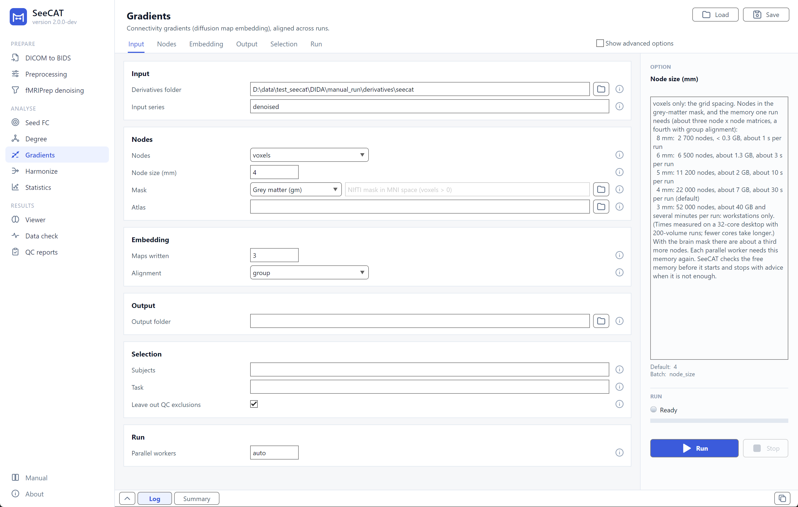
| 选项（界面） | 批处理字段 | 默认值 | 含义与设置建议 |
|---|---|---|---|
| Derivatives 文件夹 Derivatives folder | input_dir | （空） | Preprocessing 或 fMRIPrep 页写出的 SeeCAT derivatives 文件夹，如 D:/study/bids/derivatives/seecat。使用其中全部 run（或 Selection 中选定的），由于各 run 的梯度要相互对齐，所以一起分析。 |
| 输入序列 Input series | input | denoised | 每个 run 使用哪个序列：denoised（默认，未平滑）或其他 desc 标签，如 denoisedSm6。体素节点本身是对其中体素取平均，平滑意义不大。 |
| 空间 Space 高级 | space | （空） | 仅当 derivatives 中的 run 有多个空间时需要。留空：唯一的那个空间。 |
| 分辨率标签 Resolution label 高级 | res | （空） | 文件的 res-<label>，如 2；仅当衍生数据中同一批 run 有多种分辨率时需要（如 fMRIPrep 的 res-1 和 res-2）。留空：唯一的那种分辨率。 |
| 节点 Nodes | nodes | voxels | 连接矩阵在哪些节点之间计算。 voxels（默认）：MNI 空间中按 Node size 划分、位于 Mask 内的网格单元；每个节点的信号是其中数据体素的平均。得到体素级的梯度图。 时间和内存随节点数的平方增长（见 Node size）。
|
| 节点大小（mm） Node size (mm) | node_size | 4 | 仅 voxels：网格间距。灰质 mask 内的节点数，以及一个 run 需要的内存（约三个节点×节点矩阵，group 对齐时再加一个）： |
| Mask Mask | mask | gm | 仅 voxels：节点所在的范围。 灰质（gm，默认）：至少一半位于 SeeCAT 灰质 mask 内的网格单元；常用选择（Margulies et al. 2016 使用皮层）。 |
| 掩膜方式 Mask mode | mask_mode | run | 每个节点平均哪些体素。 在各 run 脑 mask 内（run，默认）：该 run 落在节点内的脑 mask 体素（voxels 节点也包括 Mask 之外的体素）；扫描边缘的节点在部分 run 中体素会少一些，甚至没有。 在组 mask 内（group）：只用位于每个所选 run 脑 mask 内的体素。组 mask 是本页所选 run（被试、task、QC 剔除）脑 mask 的交集，写入输出文件夹的 group/masks/，对应的 .json 列出所用的 run。某个 run 覆盖不全会让所有人的组 mask 变小：请查看 QC 报告，或剔除该 run。增加或去掉 run 会改变组 mask，结果随之重新计算。 按原样使用（given）：Mask（voxels 节点）或图谱（atlas 节点）中的体素，不使用各 run 的脑 mask。没有信号的体素（在 run 的脑 mask 或视野之外，去噪后的序列为 0）不参与平均，因此边缘节点在部分 run 中仍可能没有数据。 无论哪种方式，对齐都只使用在每个 run 中都有数据的节点。
|
| 图谱 Atlas | atlas | （空） | 仅 atlas：MNI 空间的 NIfTI 图像，体素值为整数分区标签（0 为背景），如 Schaefer2018_400Parcels_7Networks_order_FSLMNI152_2mm.nii.gz。每个标签是一个节点；梯度图中每个分区涂上其梯度值。 |
| 成分数 Components 高级 | n_components | 10 | 计算并参与对齐的梯度个数，默认 10（BrainSpace）。成分越多对齐越稳定，计算代价很小。 |
| 输出图数 Maps written | n_maps | 3 | 每个 run 写出前几个梯度，默认 3（desc-grad1、grad2、grad3 ...）。梯度 1 解释的方差最多（通常从感觉皮层到默认网络），梯度 2 次之（常为视觉到躯体运动），依此类推。所有成分的特征值写在 JSON sidecar 和组表格中。 |
| 稀疏度 Sparsity 高级 | sparsity | 0.9 | 计算亲和度前每个节点被置 0 的连接比例，只保留最强的连接：0.9（默认）保留前 10%，与 Margulies et al. 2016 和 BrainSpace 相同。 |
| 亲和度 Affinity 高级 | kernel | normalized_angle | 如何衡量两个节点连接模式的相似性。 normalized_angle（默认）：1 - 两模式夹角/π；BrainSpace 推荐。
|
| 扩散 alpha Diffusion alpha 高级 | alpha | 0.5 | 扩散映射的各向异性参数：0.5（默认）减弱节点采样密度的影响（Coifman & Lafon 2006）；0 相当于拉普拉斯特征映射，1 为 Laplace-Beltrami 算子。 |
| 对齐方式 Alignment | align | group | 各 run 单独得到的梯度可能顺序或正负号不同；对齐使梯度 k 在各 run 间可比，组统计需要这一步。 group 和 procrustes 都使用广义 Procrustes 对齐（与 BrainSpace 相同）：把每个 run 旋转（只做旋转和翻转，不缩放）到参考上，再以旋转后各 run 的平均作为新参考，重复最多 10 次，或直到参考的变化小于 1e-5。两者的区别在于首次参考：
|
节点的选择
| 节点大小 | 节点数（灰质） | 每个 run 内存 | 每个 run 时间 |
|---|---|---|---|
| 8 mm | 2 700 | < 0.3 GB | 约 1 秒 |
| 6 mm | 6 500 | 约 1.3 GB | 约 3 秒 |
| 5 mm | 11 200 | 约 2 GB | 约 10 秒 |
| 4 mm（默认） | 22 000 | 约 7 GB | 约 30 秒 |
| 3 mm | 52 000 | 约 40 GB | 几分钟 |
时间在 32 核台式机、200 帧的 run 上测得。SeeCAT 开始前会检查空闲内存，不够时停下并给出建议。图谱（如 Schaefer 400）速度快，每个分区一个值，另以表格写出。
输出文件
sub-01/func/…_desc-grad1Vox4_connectivity.nii.gz 该 run 对齐后的梯度 1（2、3 …… 直到 Maps written）
group/gradientsVox4/gradientsVox4_desc-grad1_reference.nii 最终参考（对齐后各 run 的平均）
group/gradientsVox4/gradientsVox4_desc-grad1_groupmatrix.nii 组平均矩阵的梯度
group/gradientsVox4/gradientsVox4_lambdas.tsv 每个 run 的特征值、解释的方差、与参考的相关6.9 Harmonize
多中心研究的每张图都带有中心和扫描仪差异。Harmonize 在计算指标（Seed FC、Degree、Gradients、VBM）之后、统计之前，从被试图中去除这些差异，同时保留你要检验的效应。校正后的图写在原图旁边，desc 标签加上后缀（desc-PCC → desc-PCCComBat）。
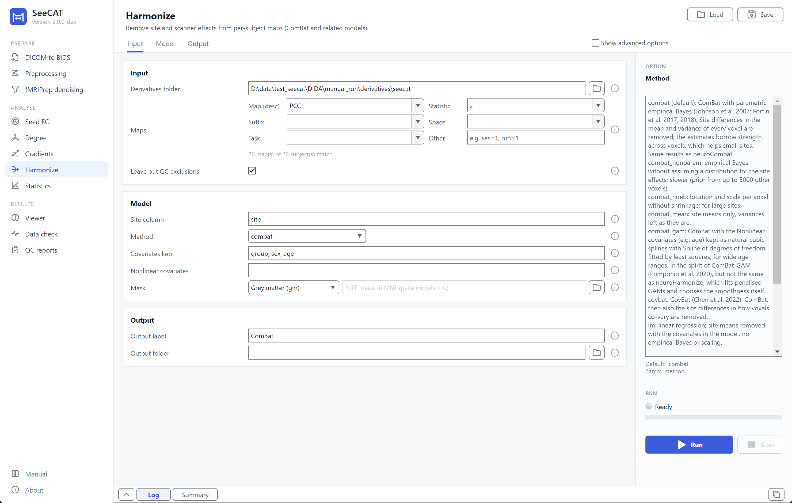
方法
| 方法 | 做什么 | 适用情况 |
|---|---|---|
combat | 参数化经验贝叶斯 ComBat（Johnson et al. 2007；Fortin et al. 2017, 2018）：每个体素的数据 = 中心位置 + 协变量效应 + 按中心缩放的误差；逐体素估计中心的位置和尺度，并在体素间收缩，然后去除。 | 默认；小中心可以从收缩中获益 |
combat_nonparam | 不假设中心效应分布的经验贝叶斯（先验取自最多 5000 个其他体素） | 中心效应明显偏离正态时 |
combat_noeb | 逐体素估计位置和尺度，不做收缩 | 大中心 |
combat_mean | 只校正中心均值 | 方差需要保持不变时 |
combat_gam | 非线性协变量以固定自由度（Spline df）的自然三次样条进入模型、用最小二乘拟合的 ComBat。思路与 ComBat-GAM（Pomponio et al. 2020）相同，但 neuroHarmonize 拟合的是带惩罚的 GAM，因此结果与它不完全相同 | 年龄跨度大、存在非线性效应 |
covbat | ComBat 之后再去除体素间协方差的中心差异（Chen et al. 2022） | 各中心的网络结构不同时 |
lm | 线性回归：在含协变量的模型中去除中心均值 | 简单的参照方法 |
各种 ComBat 的结果与 neuroCombat 一致。可以指定一个参考中心保持不变，其他中心向它校正。之后要检验的效应都必须列在要保留的协变量中；否则，在其中心间分布不同的部分，会和中心效应一起被去掉。日志和 group/harmonize<label>_<maps>_<hash>/…_report.json（hash 用于区分不同的图选择）给出校正前后存在中心效应（F 检验 p < 0.05，控制保留的效应）的体素比例。
combat、combat_nonparam、combat_noeb、combat_gam 和 covbat 的尺度（方差）校正会用每个中心自己的标准差去除该中心的残差。每个中心人数少时，这些估计噪声很大，校正后的数据看起来比实际变异更小，后续对保留协变量的检验因而偏于宽松（Nygaard et al. 2016）。在实例 B 中（3 个中心各 10 人，年龄为模拟值），对 ComBat 校正后的 VBM 图做灰质–年龄回归，得到 3 个实际并不存在的簇；用 combat_mean、lm，或不做校正而把中心作为协变量，都没有簇。每个中心少于约 20 人时，SeeCAT 会在日志和报告中给出警告。此时建议使用 combat_mean 或 lm，或不做校正、在 Statistics 中把中心列作为协变量；报告结果前请与未校正的结果对照。| 选项（界面） | 批处理字段 | 默认值 | 含义与设置建议 |
|---|---|---|---|
| Derivatives 文件夹 Derivatives folder | input_dir | （空） | 包含要校正的被试图的 SeeCAT derivatives 文件夹（Seed FC、Degree 或 Gradients 的输出），如 D:/study/bids/derivatives/seecat。未设置 Output folder 时，校正后的图写在原图旁边。 |
| 被试图 Maps | maps | （空） | 要校正哪些图，按文件名的各部分选择，与 Statistics 相同：如种子点功能连接选 Map PCC、Statistic z，第一梯度选 Map grad1Vox4。打开下拉列表可从已有的值中选；下方一行显示匹配到的图数。 每种图分别校正（每种指标运行一次本页）。所有中心的图要放在一起校正。 |
| participants.tsv participants.tsv 高级 | participants | （空） | 包含 participant_id、中心列和协变量的表格。留空：derivatives 来源的 BIDS 数据集中的 participants.tsv。 |
| 中心列 Site column | site | site | participants.tsv 中标明每个被试所属中心或扫描仪的列，如 site、scanner 或 center。每个中心至少需要 2 个被试；ComBat 在每个中心 10 人以上时效果最好。同一单位的两台扫描仪算两个中心。 |
| 方法 Method | method | combat | combat（默认）：参数化经验贝叶斯 ComBat（Johnson et al. 2007；Fortin et al. 2017, 2018）。去除每个体素均值和方差的中心差异；估计值在体素间相互借力，对小中心有帮助。结果与 neuroCombat 一致。 中心较小时（每个中心少于约 20 人）：combat、combat_nonparam、combat_noeb、combat_gam 和 covbat 的方差校正会使后续对保留协变量的检验偏于宽松（Nygaard et al. 2016）。在本手册的示例中（3 个中心各 10 人，年龄为模拟值），ComBat 之后的灰质-年龄回归出现 3 个假阳性簇，combat_mean 或 lm 之后则没有。小样本建议使用 combat_mean 或 lm；日志会给出警告。
|
| 需保留的协变量 Covariates kept | covariates | （空） | participants.tsv 中其效应必须在校正后保留的列，逗号分隔，如 diagnosis, age, sex。文本列作为类别处理。之后要检验的每个变量都必须列在这里：没有列出、且在中心间分布不同的效应，会和中心效应一起被部分去掉。 |
| 非线性协变量 Nonlinear covariates | nonlinear | （空） | 以平滑（自然样条）效应而非直线保留的数值列，如跨生命周期样本中的年龄。combat_gam 需要它；其他方法也可以用。同一列不要同时填在两个框中。 |
| 样条自由度 Spline df 高级 | spline_df | 3 | 每个非线性协变量样条的自由度，默认 3；越大曲线越灵活。 |
| 参考中心 Reference site 高级 | ref_site | （空） | 保持不变的中心；其他中心向它校正（如最大的中心，或建立常模所用的中心）。留空（默认）：所有中心校正到共同的平均水平。 |
| CovBat 方差比例 CovBat variance 高级 | covbat_var | 0.95 | 仅 covbat：对残差中解释该比例方差的主成分做校正，默认 0.95。 |
| Mask Mask | mask | gm | 要校正的体素：灰质（gm，默认）、全脑或 mask 文件；且只包括在每张图中都非零的体素。范围外的体素在输出中为 0，因此 Statistics 不会使用它们。 |
| 输出标签 Output label | label | ComBat | 加在每张图 desc 标签后面的后缀，如 desc-PCC -> desc-PCCComBat（默认 ComBat）。换一个标签可以把不同方法的结果分开（如 CovBat）。在 Statistics 中选择 Map PCCComBat。 |
| 输出文件夹 Output folder | output_dir | （空） | 结果写到哪里。留空：用该流程的默认位置，即输入旁边（对各种分析而言就是 derivatives 文件夹本身，结果图与其来源的 run 放在一起）。 若想把不同设置的结果分开，可以指定，如 D:/study/derivatives/degree_r03。每次运行的日志和配置写在其 logs 文件夹中。 |
| 工作文件夹 Work folder 高级 | work_dir | （空） | 中间文件，每个单元一个子文件夹。留空：输出文件夹旁边的 seecat_work。 单元成功后删除（除非勾选 Keep work files），失败时保留，因此重跑不会重做已完成的步骤。放在快速的本地磁盘上会更快。 |
| 排除 QC 剔除的数据 Leave out QC exclusions | qc_exclusions | true | 勾选（默认）：derivatives 文件夹的 reports/qc_exclusions.tsv 中标记为 exclude 的 run（和 T1 像）不参与计算，并在日志中列出。该列表由预处理或 fMRIPrep 去噪后的组 QC 报告按规则（头动、覆盖率、有效数据过少）生成；在 QC reports 页确认或修改每个决定。 不勾选则使用全部 run，例如用来对比剔除前后的结果。 |
| 被试 Subjects 高级 | subjects | （空） | 只用这些被试：不带 "sub-" 的编号，逗号分隔。留空：所有有匹配图的被试。 |
6.10 Statistics
对被试图做组统计：逐体素一般线性模型、对比和多重比较校正。模型、平滑度估计和随机场理论都与 SPM 一致，因此同一模型的结果与 SPM 结果表相同。
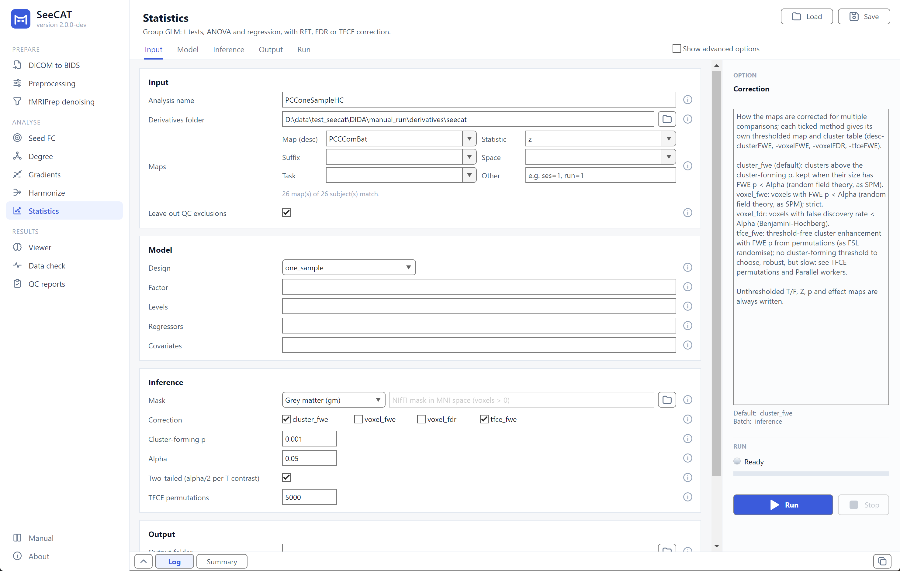
设计
| 设计 | 问题 | 需设置 | 默认对比 |
|---|---|---|---|
one_sample | 平均图是否不为 0？ | – | pos、neg |
two_sample | 两组是否不同？ | Factor：participants 列；Levels | AgtB、BgtA |
paired | 每个被试两张图（如 ses-1、ses-2） | Factor：取值不同的实体 | 两个方向 |
anova1 | 三组及以上 | Factor、Levels | 各均值相等的 F |
anova1_rm | 每个被试三张及以上图 | Factor：实体 | 各水平相等的 F |
regression | 图是否随某个评分变化？ | Regressors | <name>pos、<name>neg |
custom | 自定义设计矩阵 | Design TSV、Contrasts | – |
协变量会去均值；文本协变量转为去均值的哑变量列。Variance 为 unequal（anova1_rm 的默认）时，与 SPM 一样用 ReML 估计非球形性。
多重比较校正
- cluster_fwe（默认）：超过团块形成阈值 p（0.001）的体素组成团块，按随机场理论，团块大小的 FWE p < alpha 时保留。
- voxel_fwe：FWE p < alpha 的体素（随机场理论）。
- voxel_fdr：错误发现率 < alpha 的体素（Benjamini–Hochberg）。
- tfce_fwe：无阈值团块增强（Smith & Nichols 2009；E = 0.5，H = 2，26 邻接），体素 FWE p 由置换检验得到（Freedman–Lane：单样本为符号翻转，配对设计为被试内交换，其他为行置换），与 FSL randomise 相同。并行 worker 分担置换计算。
勾选 Two-tailed（默认）时，每对 t 对比中的每一个以 alpha/2 检验。被 QC 剔除的图不参与分析；因缺少 participants.tsv 行或缺失值而去掉的图都会在日志中列出。
| 选项（界面） | 批处理字段 | 默认值 | 含义与设置建议 |
|---|---|---|---|
| 分析名称 Analysis name | name | （空） | 本次分析的名称，只能用字母和数字，如 PCCzSCHZvsCTL。结果写到 <输出文件夹>/group/<name>/，每个文件以它开头，因此对同一数据的不同分析互不干扰。以相同名称和设置再次运行会跳过（勾选 Overwrite 可重做）。 |
| Derivatives 文件夹 Derivatives folder | input_dir | （空） | 包含被试图的 SeeCAT derivatives 文件夹，如 D:/study/bids/derivatives/seecat（Seed FC 或 Degree 的输出）。 设置后，下面的 Maps 下拉框会列出其中已有的值。 |
| 被试图 Maps | maps | （空） | 参与分析的被试图，按文件名的各部分选择。每个被试必须恰好匹配一张图（配对设计为两张，每个水平一张）。 Map（desc）：种子点或指标，如 PCC（种子点功能连接）或 degPosBinR0p2Sm6（度中心性）。 可以打开下拉列表从 derivatives 文件夹中已有的值中选，也可以直接输入。留空的字段匹配任何值。字段下方一行显示匹配到的图数。 例：sub-01_task-rest_space-MNI152NLin2009cAsym_desc-PCC_stat-z_connectivity.nii.gz 由 Map PCC、Statistic z、Suffix connectivity 选中。 |
| participants.tsv participants.tsv 高级 | participants | （空） | 被试信息表（组别、年龄、性别等），含 participant_id 列（sub-01 ...）。留空：derivatives 来源的 BIDS 数据集中的 participants.tsv。 Factor、Regressors 和 Covariates 填写的是它的列名。所用列中值为空或 n/a 的被试会被排除，并在日志中列出。 |
| 设计 Design | design | one_sample | one_sample：平均图是否不为 0？（如所有被试的 PCC 网络）。对比为 pos 和 neg。
|
| 因素 Factor | factor | （空） | two_sample 和 anova1：participants.tsv 中存放组别的列，如 diagnosis。 |
| 水平 Levels | levels | （空） | Factor 的各水平，按对比使用的顺序，逗号分隔，如 CONTROL, SCHZ：此时 AgtB 即 CONTROL > SCHZ。未列出的水平不参与分析，因此也可以从多组中挑出两组。留空：全部水平，按出现的顺序。 |
| 回归变量 Regressors | regressors | （空） | 仅 regression：要检验的评分所在的 participants.tsv 列，逗号分隔，如 age 或 PANSS_total, MoCA。它们会去均值并放在同一个模型中，因此每个变量的检验都控制了其他变量。 |
| 协变量 Covariates | covariates | （空） | 需要控制（不检验）的 participants.tsv 列，逗号分隔，如 age, sex, mean_fd。数值列去均值；文本列（如 sex、site）转为去均值的哑变量列。某列与其他列高度共线（VIF > 5）时日志会警告。配对和重复测量设计不能加入被试间协变量。 |
| 设计表（TSV） Design TSV 高级 | design_tsv | （空） | 仅 custom 设计：制表符分隔的表格，含 path 列（每一行的图，绝对路径或相对于表格的路径）和每个设计列一个数值列，如 |
| 对比 Contrasts 高级 | contrasts | （空） | 每行一个对比：名称（字母和数字）、类型 t 或 F、权重（每个设计列一个；列及其顺序见第一次运行写出的 <name>_design.tsv）。F 对比的权重每行一条，用 ";" 分隔，如 [1 -1 0; 0 1 -1]。 留空：该设计的默认对比（每个 t 检验的两个方向，或各均值相等的 F 检验）。 |
| 方差 Variance 高级 | variance | auto | 各组或各水平的方差是否可以不同（重复测量时还包括水平间的相关），即 SPM 的非球形性。 auto（默认）：equal，anova1_rm 时为 unequal。
|
| Mask Mask | mask | gm | 进行检验的体素。 灰质（gm，默认）：SeeCAT 的灰质 mask（SPM TPM 灰质概率 > 0.2）。 无论哪种，都只保留在每个被试图中都非零的体素。mask 越小，多重比较校正越宽松。 |
| 多重比较校正 Correction | inference | cluster_fwe | 统计图如何做多重比较校正；每个勾选的方法各自输出阈值化后的图和团块表（desc-clusterFWE、-voxelFWE、-voxelFDR、-tfceFWE）。 cluster_fwe（默认）：超过团块形成阈值 p 的体素组成团块，团块大小的 FWE p < Alpha 时保留（随机场理论，与 SPM 相同）。 未阈值化的 T/F、Z、p 和效应图总会写出。
|
| 团块形成阈值 p Cluster-forming p | cdt_p | 0.001 | 仅 cluster_fwe：低于此未校正 p 的体素组成团块。推荐 0.001（默认）；高于 0.001 时随机场理论的团块推断过于宽松（Eklund et al. 2016），日志会警告。 |
| 显著性水平 Alpha | alpha | 0.05 | 各校正方法的校正后显著性水平，如 0.05（默认）。勾选 Two-tailed 时，每个 t 对比以 Alpha/2 检验。 |
| 双侧（每个 t 对比 alpha/2） Two-tailed (alpha/2 per T contrast) | two_tailed | true | 默认的 t 对比成对出现（AgtB 和 BgtA，pos 和 neg），各对应一个方向。勾选（默认）：每个以 Alpha/2 检验，两者合起来就是 Alpha 水平的双侧检验。只有在看数据之前就确定了方向时才取消勾选。 |
| TFCE 置换次数 TFCE permutations | tfce.n_perm | 5000 | 仅 tfce_fwe：用多少次置换（单样本为符号翻转，配对设计为被试内交换）构建零分布。默认 5000，与 FSL randomise 相同；最小可能的 p 为 1/置换次数。可能的不同置换少于该数时（如 n 张图共 2^n 种符号翻转），全部使用。 时间随置换次数、对比数和 mask 大小增长：几分钟到一小时。并行 worker（Run 区）分担置换计算。随机种子固定，结果可完全重复。 |
| TFCE 范围指数 E TFCE extent exponent E 高级 | tfce.E | 0.5 | TFCE 中团块范围的权重，默认 0.5（Smith & Nichols 2009；FSL 对三维数据的设置）。 |
| TFCE 高度指数 H TFCE height exponent H 高级 | tfce.H | 2 | TFCE 中高度的权重，默认 2（Smith & Nichols 2009；与 FSL 相同）。 |
| 排除 QC 剔除的数据 Leave out QC exclusions | qc_exclusions | true | 勾选（默认）：derivatives 文件夹的 reports/qc_exclusions.tsv 中标记为 exclude 的 run（和 T1 像）不参与计算，并在日志中列出。该列表由预处理或 fMRIPrep 去噪后的组 QC 报告按规则（头动、覆盖率、有效数据过少）生成；在 QC reports 页确认或修改每个决定。 不勾选则使用全部 run，例如用来对比剔除前后的结果。 |
| 被试 Subjects 高级 | subjects | （空） | 只用这些被试：不带 "sub-" 的编号，逗号分隔。留空：所有有匹配图的被试。 |
输出文件
group/<name>/
<name>_design.tsv 被试图和设计列
<name>_desc-mask_mask.nii.gz 检验的体素
<name>_contrast-<c>_stat-t_statmap.nii.gz T（或 F）图，sidecar 中有自由度和平滑度
<name>_contrast-<c>_stat-z_statmap.nii.gz 相同 p 值对应的 Z
<name>_contrast-<c>_stat-p_statmap.nii.gz −log10 p
<name>_contrast-<c>_stat-effect_statmap.nii.gz 对比估计值
<name>_contrast-<c>_desc-clusterFWE_stat-t_statmap.nii.gz 阈值化后的图
<name>_contrast-<c>_desc-clusterFWE_dseg.nii.gz 保留的团块，带编号
<name>_contrast-<c>_desc-clusterFWE_clusters.tsv 团块表（SPM 风格）
<name>_contrast-<c>_desc-tfce_stat-tfce_statmap.nii.gz TFCE 值（tfce_fwe）
<name>_contrast-<c>_desc-tfceFWE_stat-p_statmap.nii.gz −log10 FWE p（tfce_fwe）
<name>_report.json团块表中每个团块给出大小、FWE 和未校正的团块 p，以及最多 3 个相距 8 mm 以上的峰值点的统计量、Z、峰值 p 和 MNI 坐标。
6.11 Viewer
查看器可在 MNI 脑上显示任意 NIfTI 图像：SeeCAT 的统计图、种子点图、度中心性图、梯度图、VBM 图，或四维 BOLD 序列。
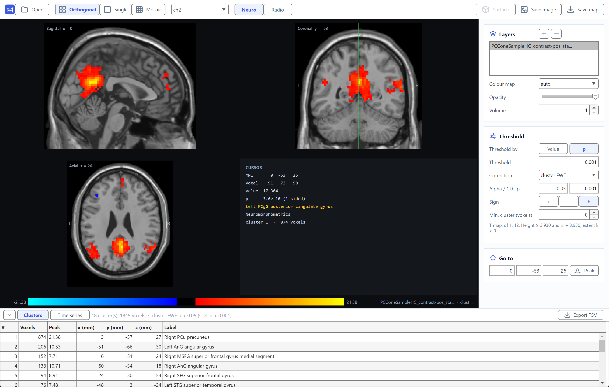
- 布局：Orthogonal（三个视图和光标信息）、Single（一个大视图和三个缩略图）、Mosaic（同一方向的多张切片）。
- 底图：按图的空间自动选择（IXI549Space 用 ch2，MNI152NLin2009cAsym 用 ICBM152 2009c），也可从下拉框选择。
- 阈值：按数值或按 p 值。对 SeeCAT 的统计图（以及头信息中有自由度的 SPM 风格统计图），p 阈值可以做校正（cluster FWE、voxel FWE、voxel FDR），使用与 Statistics 相同的代码，因此查看器与统计结果一致。还可设置方向（+、−、±）、最小团块大小、颜色和不透明度。
- 团块：团块表列出峰值和图谱标签（SPM 自带的 Neuromorphometrics；安装 BrainNet Viewer 后还有 AAL 和 Brodmann）；点击某行，光标移到该处。Export TSV 保存团块表。
- 时间序列：对四维序列，显示光标处体素的信号以及 FD 和被标记的帧；滑块和 Play 逐帧浏览。
- Save image 把当前视图存为 PNG；Save map 把阈值化后的图存为 NIfTI；Surface 在 BrainNet Viewer 中把图显示到皮层上。
- Neuro / Radio：左脑显示在左边，或在右边。
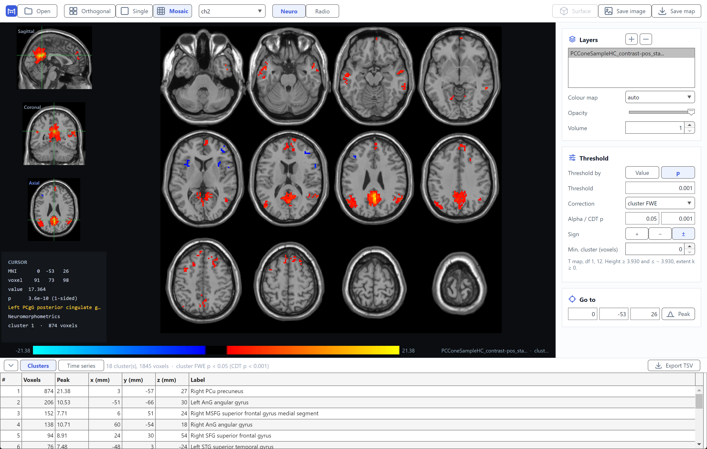
seecat.viewer('group/PCConeSampleHC/PCConeSampleHC_contrast-pos_stat-t_statmap.nii.gz')6.12 共用选项：去噪、剔除与平滑
以下选项在 Preprocessing 和 fMRIPrep denoising 中相同。
| 选项（界面） | 批处理字段 | 默认值 | 含义与设置建议 |
|---|---|---|---|
| 去噪 Denoise | denoise.enable | true | 从每个体素中去除干扰信号：对多项式趋势和所选回归量做一次回归，数据和回归量用同一个滤波器带通，滤波不会把已去除的信号再带回来。结果为 desc-denoised（未平滑），是 Seed FC 和 Degree 的输入。 |
| 回归量 Regressors | denoise.regressors | friston24, wm, csf | friston24：6 个头动参数、它们的导数和平方（Friston 1996）。 默认 friston24 + wm + csf。混杂变量表中的任何其他列，都可以在配置文件里加入（denoise.regressors）。
|
| aCompCor 成分数 aCompCor components 高级 | denoise.acompcor_n | 5 | 仅 acompcor：每种组织（白质、脑脊液）取的成分数，默认 5（Behzadi 2007）。 |
| 去趋势阶数 Detrend order 高级 | denoise.detrend_order | 1 | 与回归量一起去除的多项式趋势的阶数：0 = 只去均值，1 = 线性（默认），2 = 二次，最高 3。 |
| 带通（Hz） Band-pass (Hz) | denoise.band | 0.01 0.1 | 保留的频率范围，由低到高，单位 Hz。0.01 到 0.1（默认）是常用的静息态频段。第二个框填 0 表示只做高通（如 0.01 到 0），两个都留空表示不滤波（例如之后要计算 ALFF 类指标）。 |
| 高头动帧处理 High-motion frames | censor.mode | censor | 头动大（FD 超过阈值）的帧如何处理。 censor（默认）：滤波前先用好的帧插值填补（避免尖峰被滤波扩散），回归时不使用这些帧，并在混杂变量表中标记；Seed FC 和 Degree 之后会去掉它们。run 的长度不变。
|
| FD 阈值（mm） FD threshold (mm) | censor.fd_threshold | 0.5 | 帧间位移（Power et al. 2012）超过此值的帧算作高头动帧。常用 0.5 mm（默认）；0.2–0.3 更严格（如儿童或患者组），但会损失更多帧。 |
| 前延帧数 Frames before 高级 | censor.before | 1 | 每个高头动帧之前也标记这么多帧，默认 1。 |
| 后延帧数 Frames after 高级 | censor.after | 2 | 每个高头动帧之后也标记这么多帧，默认 2（头动的影响会持续到动作之后）。 |
| 插值方法 Interpolation 高级 | censor.interp | spectral | 滤波前如何填补被标记的帧。 spectral（默认）：用低通截止频率以下的正弦函数拟合好的帧；测试中它对好的帧和种子点图的改变都比 spline 小。
|
| 最少分钟数 Minimum minutes 高级 | censor.min_minutes | 5 | 未被标记的有效数据少于此分钟数（默认 5）的 run，会在 QC 报告中标出，并建议剔除。 |
| 平滑 Smooth | smooth.enable | true | 另写一份去噪后数据的空间平滑副本（desc-denoisedSm<FWHM>）。未平滑的 desc-denoised 总会保留，Seed FC 和 Degree 默认使用它。 |
| FWHM（mm） FWHM (mm) | smooth.fwhm | 6 | 高斯核的宽度，如 6（默认，约为体素大小的两倍）或 4。三个数字可给各轴不同的 FWHM。 |
6.13 共用选项：质量控制
| 选项（界面） | 批处理字段 | 默认值 | 含义与设置建议 |
|---|---|---|---|
| 图像质量指标（IQM） Image quality metrics (IQM) | qc.iqm | true | 预处理时计算原始 T1 和 BOLD 数据的 MRIQC 图像质量指标（与预处理共用 T1 分割、头动校正和配准，每个 run 只多花约半分钟）。BOLD：tSNR、SNR、鬼影信号比、EFC、FBER、标准化 DVARS、AFNI 离群比例和质量指数、全局相关、FD、平滑度。T1：CNR、CJV、SNR（组织 SNR 和 Dietrich SNR）、EFC、FBER、偏场范围、WM2max、组织体积分数、部分容积残差、平滑度和 TIV。 指标数值与 MRIQC 的公式一致；头部、空气、脑区等 mask 由 SeeCAT 自己生成，因此绝对值可能与实际运行 MRIQC 的结果有出入。组报告按中心显示其分布，并对离群值给出警告。 |
| 最大平动（mm） Max. translation (mm) | qc.max_translation | 3 | 某 run 的最大绝对平动（任一轴、任一帧，来自头动校正）超过此值时，建议剔除；3 mm（默认）是常用界限，约一个体素。 |
| 最大转动（度） Max. rotation (degrees) | qc.max_rotation | 3 | 与最大平动相同，针对最大绝对转动；默认 3 度。 |
| 最大平均 FD（mm） Max. mean FD (mm) | qc.max_mean_fd | 0.5 | 平均帧间位移（Power）超过此值的 run 建议剔除：默认 0.5 mm；0.2–0.3 mm 更严格（Parkes et al. 2018 的宽松标准为 0.55，严格标准为 0.25）。超过 0.25 mm 时报告总会给出警告。 |
| 最小全脑覆盖率 Min. brain coverage | qc.min_coverage | 0.9 | 标准化后，模板脑 mask 中必须落在扫描视野内（每一帧都有数据）的比例；默认 0.9。低于此值说明部分脑区（常见小脑或顶部皮层）没有扫到，这样的 run 建议剔除。报告还会分别给出脑顶部和底部的覆盖率。 |
| 最小脑区 Dice Min. brain Dice | qc.min_brain_dice | 0.85 | 配准检查：标准化后 run 的脑 mask 与模板脑 mask 的 Dice 重叠（1 = 完全一致）。低于此值（默认 0.85）视为标准化失败，建议剔除；正常的通常在 0.9 以上。 报告中每个 run 还给出：标准化后的灰质、白质、脑脊液图与 SPM 组织模板的相关（reg_gm_corr 等），以及由平均 EPI 自身信号强度得到的脑区与 T1 脑区的 Dice（reg_epi_t1_dice，反映 EPI 与 T1 的配准；正常约 0.85–0.92）。在本中心内为离群值时给出警告。 |
| IQM 离群 z 值 IQM outlier z 高级 | qc.iqm_z | 3 | 某个图像质量指标在本中心内的稳健 z 值（距中位数多少个 MAD）朝坏的方向超过此值（默认 3）时给出警告（不剔除）。中心来自 participants.tsv 的 site 列；没有这一列，或某中心不足 5 个 run 时，以整个数据集为参照。 |
6.14 共用选项：run 的选择
处理 run 的页面都可以按被试、session、任务和 run 选择数据。Seed FC、Degree、Gradients、Harmonize 和 Statistics 还会排除质量控制剔除的数据：
| 选项（界面） | 批处理字段 | 默认值 | 含义与设置建议 |
|---|---|---|---|
| 被试 Subjects | subjects | （空） | 要处理的被试：不带 "sub-" 的编号，逗号分隔，如 01, 02, 15。留空：找到的全部被试。 |
| Session Sessions 高级 | sessions | （空） | 不带 "ses-" 的标签，逗号分隔，如 1, 2。留空：全部 session。 |
| 任务 Task | task | （空） | run 的任务标签，如 rest。留空：数据中唯一的任务；如果有多个任务，请指定一个。 |
| Run Runs 高级 | runs | （空） | run 标签，逗号分隔，如 1, 2。留空：全部 run。 |
| 排除 QC 剔除的数据 Leave out QC exclusions | qc_exclusions | true | 勾选（默认）：derivatives 文件夹的 reports/qc_exclusions.tsv 中标记为 exclude 的 run（和 T1 像）不参与计算，并在日志中列出。该列表由预处理或 fMRIPrep 去噪后的组 QC 报告按规则（头动、覆盖率、有效数据过少）生成；在 QC reports 页确认或修改每个决定。 不勾选则使用全部 run，例如用来对比剔除前后的结果。 |
在 Preprocessing 和 fMRIPrep denoising 页中，Task 可以填写多个任务（rest, nback；脚本中为 {'rest', 'nback'}），留空则处理所有任务。填好输入文件夹后，其下方一行显示其中 BOLD run 的被试、session 和任务，例如 Found: 10 subjects (11061, 11062, 11066, ..., 50052, 50056); tasks: rest (10 runs)；留空的 Subjects 和 Task 输入框也会提示将处理哪些被试和任务。
6.15 共用选项：输出与运行
| 选项（界面） | 批处理字段 | 默认值 | 含义与设置建议 |
|---|---|---|---|
| 输出文件夹 Output folder | output_dir | （空） | 结果写到哪里。留空：用该流程的默认位置，即输入旁边（对各种分析而言就是 derivatives 文件夹本身，结果图与其来源的 run 放在一起）。 若想把不同设置的结果分开，可以指定，如 D:/study/derivatives/degree_r03。每次运行的日志和配置写在其 logs 文件夹中。 |
| 工作文件夹 Work folder 高级 | work_dir | （空） | 中间文件，每个单元一个子文件夹。留空：输出文件夹旁边的 seecat_work。 单元成功后删除（除非勾选 Keep work files），失败时保留，因此重跑不会重做已完成的步骤。放在快速的本地磁盘上会更快。 |
| 并行 worker 数 Parallel workers | n_workers | auto | 同时处理多少个单元（run 或被试），每个由并行池中的一个 worker 处理（需要 Parallel Computing Toolbox）。 auto（默认）：在内存允许的范围内尽量多开。SeeCAT 估算一个单元需要的内存（依据最大的 run），再加上每个 worker 约 1 GB，最多使用空闲内存的 85%，且不超过核数和单元数；日志会写明估算结果和选择。只有一个单元，或内存不够开两个 worker 时，就逐个处理，不开并行池。 没有该工具箱时 SeeCAT 逐个处理。已经打开的并行池会原样沿用。 |
| 覆盖已完成的单元 Overwrite finished units 高级 | overwrite | false | 设置相同、已经完成的单元会被跳过。勾选则无论如何重新计算。设置有变化的单元总会重做。 |
| 保留工作文件 Keep work files 高级 | keep_work | false | 保留成功单元的工作文件夹，例如用于查看中间图像。 |
7 实例
本章完整运行一个研究，并用真实结果说明 SeeCAT 的输出。本手册的所有截图都来自这些运行。运行用的脚本见第 8.2 节；各配置也可以在界面中用 Load 载入。
7.1 示例数据
一个多中心抑郁症研究的公开测试子集：来自三个中心（CSU、PKU、SCU）的 30 名被试，每个中心 5 名健康对照（HC）和 5 名重性抑郁障碍患者（MDD）。每名被试有一幅 T1 加权像和一次静息态扫描（TR 2 s）。三个中心的文件夹已合并为一个 BIDS 数据集，并附有 participants.tsv：
participant_id site group age sex
sub-CSUHC0001 CSU HC 28 M
sub-CSUHC0002 CSU HC 34 M
…所有步骤都使用 n_workers = 'auto'，在一台 32 核、约 200 GB 可用内存的工作站上运行。输出写入 manual_run/derivatives/seecat。
7.2 实例 A：默认网络的种子点功能连接
从 BIDS 数据得到后扣带回（PCC）连接的组水平图，并比较两组。
A1. 检查数据
在 Data check 页选择 BIDS 文件夹并按 Scan。表中列出 30 个 run，每名被试一个，并给出各自的帧数和 TR（第 6.2 节）。没有缺失，可以开始预处理。
A2. 预处理
在 Preprocessing 页：BIDS folder 设为 bids2，Output folder 设为 manual_run/derivatives/seecat，勾选 VBM maps（供实例 B 使用），Parallel workers 设为 auto；其余选项保持默认。按 Run。
Parallel workers (auto): about 5.5 GB per worker (4.5 GB task + 1 GB worker), 0.5 GB kept by the main MATLAB,
206.4 GB free: 30 worker(s) (32 cores, 30 task(s))
Parallel pool: A pool of 30 workers did not start (…). Started 15 workers instead.
QC: …/derivatives/seecat/reports/prep_qc.html
Tissue volumes: …/derivatives/seecat/reports/anat_volumes.tsv
Done: 30 ok, 0 skipped, 0 failed.按内存估算可以用 30 个 worker。Windows 无法一次启动这么多，SeeCAT 于是减半重试，并在日志中注明。30 个 run 共用时约 19 分钟。
A3. 检查质量
组报告 reports/prep_qc.html（图见第 6.5 节）建议剔除 4 个 run：
| Run | 原因 | 平均 FD（mm） | 最大平动（mm） | 保留分钟数 |
|---|---|---|---|---|
| sub-CSUHC0004 | 平动 > 3 mm；删帧后数据太少 | 0.300 | 3.02 | 3.9 |
| sub-CSUHC0005 | 平动 > 3 mm；删帧后数据太少 | 0.273 | 3.97 | 4.4 |
| sub-CSUMDD0004 | 删帧后数据太少 | 0.237 | 1.13 | 4.1 |
| sub-PKUMDD0002 | 删帧后数据太少 | 0.273 | 0.68 | 4.9 |
另有一些 run 有警告，但予以保留。例如：
- sub-PKUHC0001：DVARS 和 AQI 离群，与 TPM 的灰质相关偏低（0.637，全研究最低）。决定前请打开它的 run 报告，查看 carpet 图和配准。
- sub-PKUMDD0005：平均 FD 0.281 mm，超过 0.25 mm 的警告线，但保留的干净数据足够。
- sub-SCUHC0001：FBER 离群。它的 run 报告（图见第 6.5 节）显示扫描约 2.5 分钟处有一次头动，其附近被删除的 6 帧以阴影标出。
所有 run 的脑 mask 与模板的 Dice 在 0.956–0.984 之间，没有配准失败。这里保持建议不变。QC reports 页显示同一列表，可在下一步之前修改任一决定。
之后的每一步都会读取剔除列表，并在日志中写明略去了哪些 run：
Left out by QC (reports/qc_exclusions.tsv): sub-CSUHC0004_task-rest, sub-CSUHC0005_task-rest,
sub-CSUMDD0004_task-rest, sub-PKUMDD0002_task-rest剩下 26 个 run：HC 13 人（CSU 3、PKU 5、SCU 5），MDD 13 人（CSU 4、PKU 4、SCU 5）。
A4. Seed FC
在 Seed FC 页添加两个半径 6 mm 的球：PCC 位于 (0, −53, 26)，mPFC 位于 (0, 52, −6)。26 个 run 用时 7 秒。每个 run 得到 r 图和 Fisher z 图：
sub-SCUHC0001_task-rest_space-IXI549Space_res-3_desc-PCC_stat-z_connectivity.nii.gz
sub-SCUHC0001_task-rest_space-IXI549Space_res-3_desc-mPFC_stat-z_connectivity.nii.gzA5. 多中心校正
在 Harmonize 页：Map 为 PCC，Statistic 为 z，Site column 为 site，Method 为 combat，Covariates kept 为 group, sex, age。
[harmonizeComBat_PCCz_3821b739] 26 maps, 45150 voxels, 3 sites (CSU: 7, PKU: 9, SCU: 10)
[harmonizeComBat_PCCz_3821b739] kept effects: group_MDD, sex_M, age
[harmonizeComBat_PCCz_3821b739] voxels with a site effect (p < 0.05): 9.9% before, 0.1% after校正前，9.9% 的灰质体素存在中心效应，约为随机预期 5% 的两倍；ComBat 之后为 0.1%。新的图命名为 desc-PCCComBat。中心这么小时，SeeCAT 还会在日志中给出第 6.9 节所述的小样本警告。这里功能连接图仍使用 ComBat；实例 B 说明何时这一点会产生影响。
A6. 健康对照组的单样本检验
13 名对照的 PCC 连接是否大于 0？在 Statistics 页：Name 为 PCConeSampleHC，Map 为 PCCComBat，Statistic 为 z，Design 为 one_sample，Subjects 填 13 名 HC 的标签，Correction 选 cluster_fwe 和 tfce_fwe。
[PCConeSampleHC] 13 maps, 45150 voxels in the analysis mask
[PCConeSampleHC] df 12.00; FWHM [6.31 6.48 7.38] mm; resels 2812.9
[PCConeSampleHC] TFCE: 5000 permutations (flip), 2 contrast(s), 16 worker(s), 93 s
[PCConeSampleHC] pos, cluster_fwe: height 3.930, 12 cluster(s) / 1705 voxel(s) survive
[PCConeSampleHC] pos, tfce_fwe: height 2.780, 33 cluster(s) / 3867 voxel(s) survive
[PCConeSampleHC] neg, cluster_fwe: height 3.930, 6 cluster(s) / 140 voxel(s) survive
[PCConeSampleHC] neg, tfce_fwe: height 6.340, 4 cluster(s) / 7 voxel(s) survive自由度为 12 时，成簇阈值 p < 0.001 对应 t ≥ 3.93。最大的几个正簇正是默认网络：
| 体素数 | 峰值 t | 峰值 Z | x, y, z（mm） | 脑区 |
|---|---|---|---|---|
| 874 | 21.38 | 6.53 | 3, −57, 27 | 楔前叶 / 后扣带回（种子点） |
| 206 | 10.53 | 5.20 | −51, −66, 30 | 左侧角回 |
| 152 | 7.71 | 4.55 | 6, 51, 24 | 内侧额上回 |
| 138 | 10.71 | 5.23 | 60, −54, 18 | 右侧角回 |
| 94 | 8.91 | 4.85 | 24, 30, 54 | 右侧额上回 |
TFCE 找到同一网络，范围更大（3867 个体素）。它的 height 是存活的最小 t 值（2.78），因此低于成簇阈值。在簇文件中，体素数为 n/a 的行是上一行所在簇的其他峰值（如 PCC 簇中的 −9, −69, 27 和 3, −63, 39）。在查看器中打开结果（图见第 6.11 节）：设为 p 0.001、cluster FWE、双侧时，查看器显示同样的 18 个簇（12 个正、6 个负；1845 个体素）。
A7. 两样本检验：HC 对比 MDD
Name 为 PCCtwoSample，Design 为 two_sample，Factor 为 group，Levels 为 HC, MDD，Covariates 为 age, sex。
[PCCtwoSample] 26 maps, 45150 voxels in the analysis mask
[PCCtwoSample] df 22.00; FWHM [6.09 6.23 7.18] mm; resels 3115.0
[PCCtwoSample] HCgtMDD, cluster_fwe: height 3.505, 0 cluster(s) / 0 voxel(s) survive
[PCCtwoSample] MDDgtHC, cluster_fwe: height 3.505, 0 cluster(s) / 0 voxel(s) survive两个方向都没有存活的簇。每组 13 人，这在意料之中，并不说明两组的连接相同。未阈值化的 t 图（…_contrast-HCgtMDD_stat-t_statmap）仍可在查看器中显示，或用于规划更大样本的研究。
7.3 实例 B：灰质体积与年龄（VBM）
由于 A2 中勾选了 VBM maps，每幅 T1 已有 MNI 空间（1.5 mm）、经 8 mm 平滑的调制灰质图：
sub-SCUHC0001_space-IXI549Space_res-1p5_label-GM_desc-modulatedSm8_probseg.nii每名被试的颅内总体积在 reports/anat_volumes.tsv 中。Statistics 和 Harmonize 会自动把它读作 tiv_ml 列。QC 剔除针对的是 fMRI run，因此这里使用全部 30 幅 T1。
B1. 对年龄的回归
在 Statistics 页：Name 为 VBMage，Map 为 modulatedSm8，Label 为 GM，Suffix 为 probseg，Design 为 regression，Regressors 为 age，Covariates 为 sex, tiv_ml, site，Mask 为 gm。
[VBMage] 30 maps, 414177 voxels in the analysis mask
[VBMage] df 24.00; FWHM [11.43 11.81 11.25] mm; resels 797.0
[VBMage] agepos, cluster_fwe: height 3.467, 0 cluster(s) / 0 voxel(s) survive
[VBMage] ageneg, cluster_fwe: height 3.467, 0 cluster(s) / 0 voxel(s) survivesite 列是文本，因此以两个指示变量进入模型。截距、年龄、性别、TIV 和中心共 6 列，剩下 30 − 6 = 24 个自由度。年龄是随机生成的，没有效应才是正确结果。
B2. 这里为什么不用 ComBat
VBM 的中心差异很大：校正前 49.8% 的灰质体素存在中心效应（保留组别、性别、年龄和 TIV 的 ComBat 之后为 0.2%）。先做校正看起来很自然。我们在每种处理之后都做了同样的回归：
| 所用的图 | 模型中的中心 | 年龄效应的簇数（cluster FWE） |
|---|---|---|
| 未校正 | 作为协变量 | 0 |
ComBat（combat） | 无 | 3 |
ComBat（combat） | 作为协变量 | 2 |
只校正均值（combat_mean） | 无 | 0 |
线性回归（lm） | 无 | 0 |
年龄效应并不存在，所以 ComBat 后出现的簇是假阳性。ComBat 仅用每个中心的 10 名被试来重新缩放该中心的残差方差。这使校正后的数据看起来比实际变异更小，对保留协变量的检验因而偏于宽松（Nygaard et al. 2016）。只去除中心均值的方法没有这个问题。每个中心少于约 20 人时：
- 使用
combat_mean或lm，或不做校正而把中心作为协变量； - 报告任何 ComBat 结果前，先与未校正的结果对照。
SeeCAT 会在 Harmonize 的日志和报告中给出这一警告。
7.4 实例 C：度中心性与梯度
C1. Degree
Degree 使用默认设置：灰质 mask，r > 0.2 的正相关，二值和加权度中心性，同时输出 z 分数图，6 mm 平滑。
Parallel workers (auto): about 3.9 GB per worker (2.9 GB task + 1 GB worker), …: 26 worker(s)
Done: 26 ok, 0 skipped, 0 failed.26 个 run 用时约 2 分钟。每个 run 得到四种图，每种都有原始值和 z 分数两个版本：
…_desc-degPosBinR0p2_stat-z_connectivity.nii.gz 二值，未平滑
…_desc-degPosWeiR0p2Sm6_stat-z_connectivity.nii.gz 加权，平滑：统计时的常用选择对 degPosWeiR0p2Sm6 z 做校正（保留组别、性别和年龄）后，存在中心效应的体素从 17.2% 降到 0.0%。这里度中心性比种子点连接更依赖中心，可能是因为它概括了整个连接分布，而后者受噪声和平滑度的影响。
C2. Gradients
Gradients 使用默认设置：Nodes 为 voxels，Node size 为 4 mm（单元因此名为 gradientsVox4），10 个成分、输出 3 张图，Alignment 为 group。
Parallel workers (auto): about 8.2 GB per worker (7.2 GB task + 1 GB worker), 7.7 GB kept by the main MATLAB,
187.4 GB free: 18 worker(s) (32 cores, 26 task(s))
[gradientsVox4] 26 run(s), 21972 nodes (Vox4); about 7.2 GB of memory per run being computed
[gradientsVox4] node series done; 19564 of 21972 nodes have data in every run
[gradientsVox4] gradients of 26 run(s) in 413 s (15 worker(s))
[gradientsVox4] finished (472.0 s)每个 run 都需要一个 21972 × 21972 的连接矩阵，因此 worker 数（18）由内存而非核数决定。参考梯度是组平均矩阵的梯度。每个 run 先对齐到参考，再用对齐后各 run 的平均作为新参考，如此迭代，直到参考不再变化。
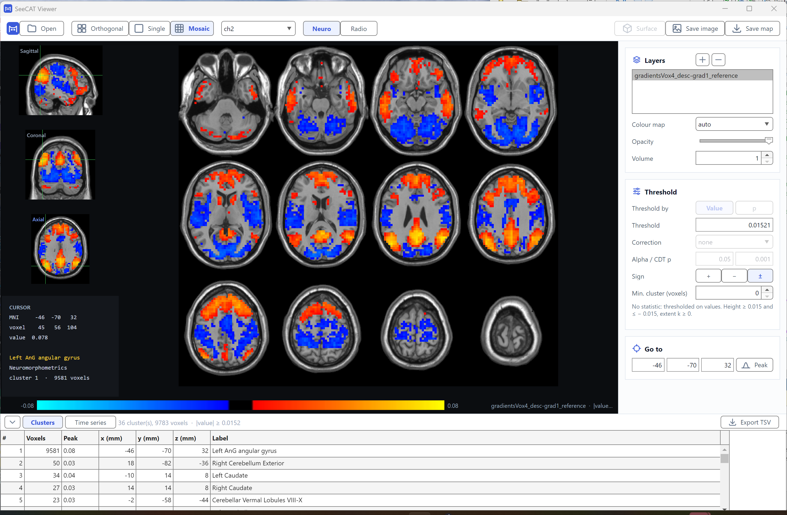
group/gradientsVox4/gradientsVox4_lambdas.tsv 按 run 给出：
- 特征值；
- 梯度 1 解释的方差：0.18–0.31，中位数 0.24；
- 对齐后的梯度 1 与参考的相关：0.43–0.69，中位数 0.58。
若某个 run 的相关明显低于其他 run，值得查看它的 QC 报告。各 run 的图（desc-grad1Vox4 … grad3Vox4）可以像其他图一样做校正和统计。
7.5 整个研究的用时
| 步骤 | 单元 | Worker 数 | 用时 |
|---|---|---|---|
| 预处理（含 IQM 和 VBM） | 30 个 run | 15 | 19 分钟 |
| Seed FC（2 个种子点） | 26 个 run | 26 | 7 秒 |
| Degree | 26 个 run | 26 | 2 分钟 |
| Gradients（Vox4） | 26 个 run | 15 | 8 分钟 |
| Harmonize（3 种指标） | 每种 26–30 张图 | 1 | 每种 3–10 秒 |
| Statistics，单样本加 TFCE（5000 次置换） | 13 张图 | 16 | 96 秒 |
| Statistics，两样本 / VBM 回归 | 26 / 30 张图 | 1 | 2 秒 / 5 秒 |
8 批处理脚本
窗口中的所有功能都可以用 MATLAB 代码调用。每个流程由一个结构体配置，交给 seecat.run 运行；窗口的 Save 按钮保存的就是这个结构体（JSON 格式）。
8.1 函数
| 函数 | 用途 |
|---|---|
SeeCAT | 打开主窗口 |
cfg = seecat.config('prep') | 某流程全部选项的默认值（prep、fmriprep、fc、degree、gradient、harmonize、stat） |
cfg = seecat.config('file.json') | 读取保存的配置；缺少的选项取默认值 |
seecat.check_config(cfg) | 一次报告所有无效选项 |
seecat.save_config(cfg, 'file.json') | 保存配置 |
S = seecat.run(cfg) | 运行流程；S 是汇总表（每个单元一行） |
seecat.run('file.json') | 运行保存的配置 |
seecat.bids.scan_dicom(dir)、seecat.bids.from_dicom(dir, bids)、seecat.bids.scan_nifti(dir)、seecat.bids.from_nifti(dir, bids)、seecat.bids.plan_rules(plan, file) | 整理为 BIDS（Import to BIDS） |
R = seecat.qc.runs(folder, 'raw') | Data check 的表格 |
seecat.qc.exclusion_list(folder) | 读取带指标的 QC 剔除列表；(folder, 'set', ids, exclude, notes) 修改它 |
seecat.viewer(file, ...) | 用查看器打开图像 |
8.2 一个完整的研究
第 7 章各实例的脚本汇总在一个文件里。每个 seecat.run 都可以单独运行；再次运行时已完成的单元会跳过。
bids = 'D:/data/test_seecat/DIDA/bids2';
out = 'D:/data/test_seecat/DIDA/manual_run/derivatives/seecat';
% 1. 预处理，计算图像质量指标并输出 VBM 图
cfg = seecat.config('prep');
cfg.bids_dir = bids;
cfg.output_dir = out;
cfg.vbm.enable = true;
cfg.n_workers = 'auto';
seecat.run(cfg);
% ……查看 reports/prep_qc.html 和 QC reports 页……
% 2. 种子点功能连接
cfg = seecat.config('fc');
cfg.input_dir = out;
cfg.seeds = struct('name', {'PCC', 'mPFC'}, 'center', {[0 -53 26], [0 52 -6]}, ...
'radius', {6, 6}, 'file', {'', ''});
cfg.n_workers = 'auto';
seecat.run(cfg);
% 3. 度中心性和梯度
cfg = seecat.config('degree'); cfg.input_dir = out; cfg.n_workers = 'auto'; seecat.run(cfg);
cfg = seecat.config('gradient'); cfg.input_dir = out; cfg.n_workers = 'auto'; seecat.run(cfg);
% 4. 对三个中心的 PCC 图做多中心校正
cfg = seecat.config('harmonize');
cfg.input_dir = out;
cfg.maps = struct('desc', 'PCC', 'stat', 'z');
cfg.site = 'site';
cfg.covariates = {'group', 'sex', 'age'};
seecat.run(cfg); % 写出 desc-PCCComBat 图
% 5. HC 组内单样本 t 检验，加 TFCE
P = seecat.io.read_tsv(fullfile(bids, 'participants.tsv'));
hc = erase(P.participant_id(strcmp(P.group, 'HC')), 'sub-')';
cfg = seecat.config('stat');
cfg.name = 'PCConeSampleHC';
cfg.input_dir = out;
cfg.maps = struct('desc', 'PCCComBat', 'stat', 'z');
cfg.design = 'one_sample';
cfg.subjects = hc;
cfg.inference = {'cluster_fwe', 'tfce_fwe'};
cfg.n_workers = 'auto';
seecat.run(cfg);
% 6. VBM：灰质与年龄；使用未校正的图，中心作为协变量
cfg = seecat.config('stat');
cfg.name = 'VBMage';
cfg.input_dir = out;
cfg.maps = struct('desc', 'modulatedSm8', 'label', 'GM', 'suffix', 'probseg');
cfg.design = 'regression';
cfg.regressors = {'age'};
cfg.covariates = {'sex', 'tiv_ml', 'site'};
cfg.mask = 'gm';
seecat.run(cfg);
seecat.viewer(fullfile(out, 'group', 'PCConeSampleHC', 'PCConeSampleHC_contrast-pos_stat-t_statmap.nii.gz'));8.3 配置文件
配置文件就是 JSON 格式的结构体。只需写出修改过的选项，其他取默认值。含 Inf 的数值以文本保存（"[0 75 Inf]"），读回时还原为数值。
{
"pipeline": "stat",
"name": "PCCtwoSample",
"input_dir": "D:/data/test_seecat/DIDA/manual_run/derivatives/seecat",
"maps": {"desc": "PCCComBat", "stat": "z"},
"design": "two_sample",
"factor": "group",
"levels": ["HC", "MDD"],
"covariates": ["age", "sex"]
}依次运行多个配置：
for f = {'prep.json', 'fc.json', 'harmonize.json', 'stat.json'}
seecat.run(fullfile('D:/study/configs', f{1}));
end8.4 在服务器上运行
没有图形界面时，用 -batch 启动 MATLAB：
matlab -batch "addpath('/opt/spm'); addpath('/opt/SeeCAT/SeeCAT'); seecat.run('/data/configs/prep.json')"日志在运行过程中实时写出（<输出文件夹>/logs），可以用 tail -f 查看进度。
9 输出文件总览
9.1 derivatives 文件夹
derivatives/seecat/
dataset_description.json 记录来源数据集（SourceDatasets）
sub-<label>/[ses-<label>/]
anat/ T1 的输出（Preprocessing）
func/ run 的输出和被试图（所有流程）
sub-<label>_…_desc-qc_report.html run 报告、qc_metrics.json、figures/
group/
<name>/ Statistics
harmonize<label>_<maps>/ Harmonize：maps.tsv、report.json
gradients<nodes>/ Gradients：参考梯度图、lambdas.tsv
reports/
prep_qc.html、prep_qc.tsv 组 QC（或 fmriprep_qc.*）
qc_exclusions.tsv 剔除列表
anat_volumes.tsv 每个 T1 的 GM、WM、CSF、TIV
<pipeline>_<时间>_summary.tsv 每次运行一个
logs/
<pipeline>_<时间>.log、_config.json 主日志和所用配置
<pipeline>_<时间>/<unit>.log 每个单元一个日志
done/ 已完成的单元及其设置（用于跳过）
outputs/ 每个单元写出的文件清单
seecat_work/ 工作文件（在输出文件夹旁边）9.2 文件名
| 文件 | 由谁写出 | 内容 |
|---|---|---|
*_desc-preproc_bold | Preprocessing | 标准化后、未去噪的 BOLD |
*_desc-denoised_bold | Preprocessing、fMRIPrep denoising | 去噪、带通、未平滑 |
*_desc-denoisedSm<fwhm>_bold | 同上 | 去噪并平滑 |
*_desc-brain_mask | 同上 | 输出空间的脑 mask |
*_desc-confounds_timeseries.tsv | 同上 | 混杂变量；censor 列标记后续分析不使用的帧 |
*_label-GM_probseg | Preprocessing | 个体空间组织图；sidecar 中有各组织体积和 TIV |
*_space-IXI549Space_res-1p5_label-GM_desc-modulated[Sm8]_probseg | Preprocessing（VBM） | 标准化、调制后的灰质（以及白质、脑脊液） |
*_desc-<seed>_stat-r|z_connectivity | Seed FC | 种子点相关、Fisher z |
*_desc-deg…_stat-raw|z_connectivity | Degree | 度或强度 |
*_desc-grad<k><nodes>_connectivity | Gradients | 该 run 对齐后的梯度 k |
*_desc-<desc>ComBat_* | Harmonize | 校正后的图 |
group/<name>/…_statmap | Statistics | 统计图（t、F、z、p、效应、TFCE） |
9.3 混杂变量表
| 列 | 内容 |
|---|---|
trans_x … rot_z、*_derivative1、*_power2、*_derivative1_power2 | Friston 24 头动回归量（转动单位为弧度） |
framewise_displacement | Power FD（mm；头部半径按 50 mm 计） |
global_signal、white_matter、csf | 脑、白质、脑脊液 mask 内的平均信号 |
c_comp_cor_XX、w_comp_cor_XX | 脑脊液和白质的 aCompCor 成分 |
motion_outlier_XX | 每个被标记的帧一列（该帧处为 1） |
censor | 1 = Seed FC、Degree 和 Gradients 不使用该帧 |
9.4 JSON sidecar
每个图像的 sidecar 记录它是如何生成的。通用字段：Sources（来源文件：各 run 的输出用 BIDS URI，如 bids:raw:sub-01/func/…；Harmonize 和 Statistics 列出输入图的路径）、Software；以及各步骤特有的字段，例如 FramesUsed、FramesTotal、Seed（Seed FC）；Threshold、Sign、Measure（Degree）；Lambdas、VarianceExplained、Alignment（Gradients）；Harmonization、Site、KeptEffects（Harmonize）；DegreesOfFreedom、FWHMmm、Resels、Contrast、Inference（Statistics）。
10 性能、内存与常见问题
10.1 时间与内存
| 步骤 | 每个 run（典型） | 内存 |
|---|---|---|
| Preprocessing，3 mm，200 帧 | 4–6 分钟（其中分割约 2 分钟） | 2–5 GB；大尺寸 T1（如 512×512×156）计算 IQM 时更多 |
| Seed FC | 几秒 | < 1 GB |
| Degree，3 mm 灰质 | 几秒到一分钟 | 约 3 GB |
| Gradients | 见 6.8 节的表格 | 随节点数的平方增长 |
| Harmonize | 整个研究几秒 | 被试图数 × 体素数 |
| Statistics，TFCE | 每次置换、每个对比约 0.2 秒（52 000 个体素） | 每个 worker：被试图数 × 体素数 |
设置 n_workers = auto 时，SeeCAT 根据这些估算和空闲内存决定 worker 数，并写在日志中。
10.2 常见问题
有一个被试失败了，需要全部重跑吗？
不需要。用同样的配置再运行一次：已完成的被试会跳过，失败的被试从中断的步骤继续。原因见该单元的日志（logs/<pipeline>_<时间>/<unit>.log）。
改了一个选项，哪些会重新计算？
结果依赖该选项的所有单元。只改 Parallel workers 或 Keep work files 不会触发重新计算；勾选 Overwrite 会重新计算所有单元并清空其工作目录。此外，已完成的单元在输入改变、SeeCAT 本身更新，或其某个输出被删除时，也会重新运行，日志会写明原因。输入包括单元读取的每个文件，也包括选项中指定的文件（种子点和 ROI 图像、掩膜、图谱、图像协变量、被试信息表），以及选中的图、被试信息和 QC 剔除或恢复的 run。以相对路径给出的文件（seed.nii、./rois/seed.nii）按 MATLAB 当前文件夹解析，与读取时一致；没有扩展名的文字（如 gm、auto）视为关键字。64 MB 以内的文件按内容比较，更大的文件（BOLD 序列）按大小和修改时间比较。SeeCAT 本身指计算结果的代码和自带模板：更新 SeeCAT 后，已完成的单元会用新代码重新计算。每次运行都会检查代码文件的名称、大小和修改时间，因此在 MATLAB 打开期间更新代码，不必重启也会被发现。此外的文件（例如另行安装的 SPM）不在跟踪范围内，修改后请勾选 Overwrite。
能否把结果写到输入文件夹，或同时运行两次 SeeCAT？
输出文件夹不能是 BIDS 文件夹或 fMRIPrep 文件夹，SeeCAT 会在写入任何文件之前拒绝。其他情况下，如果某个单元要覆盖自己的输入文件，它会报错停止，并保持该文件不变。两个 SeeCAT 会话可以同时在同一个输出文件夹中处理不同的单元（例如不同被试）；正被另一个会话计算的单元会报错并写明是哪个会话，再次运行同一配置时会计算它。如果 MATLAB 在单元运行时被关闭，同一台电脑上的下一次运行会自动移除它留下的锁（logs/locks/）。
Seed FC 提示找不到 desc-denoised，或找不到任何 run。
确认 derivatives 文件夹是 Preprocessing 或 fMRIPrep denoising 的输出，且开启了 Denoise。如果 run 有多个空间，请设置 Space；有多个任务时请设置 Task。如果所有 run 都被 QC 剔除了，请查看 QC reports 页。
Statistics 提示每个被试有多张图。
被试图字段必须为每个被试恰好选中一张图（配对设计为两张）。补充 Space、Task 或 Other（如 run=1），直到字段下方显示每个被试一张图。
年龄、性别和组别从哪里来？
来自 BIDS 数据集的 participants.tsv（见 3.7 节）。所用列中值为空或 n/a 的被试会被排除在该分析之外，并在日志中列出。
做 Seed FC 前要平滑吗？
默认输入是未平滑的 desc-denoised；如果要与使用平滑数据计算相关的研究保持一致，可选 denoisedSm6。Degree 和 Gradients 应使用未平滑的数据；Degree 会在之后平滑结果图。
为什么要做多中心校正，什么时候不需要？
多个中心或扫描仪的图放在同一分析中、且每个中心有足够的被试时（ComBat 在每个中心 10 人以上时效果最好），应做校正。要检验的效应都必须列在协变量中。只有一个中心时不需要。
论文中如何报告质量控制？
组报告给出剔除规则、被剔除的 run 及原因；reports/qc_exclusions.tsv 和 prep_qc.tsv 包含具体数值。请报告剔除规则、各组和各中心被剔除的 run 数，以及各组的平均 FD。
运行时窗口没有反应。
正常情况下窗口应保持可用：计算在另一个 MATLAB 进程中进行。如果 MATLAB 本身正忙（例如命令窗口中正在执行长时间的命令），窗口会等待它结束。
11 参考文献
- Ashburner J, Friston KJ (2005). Unified segmentation. NeuroImage 26:839–851.
- Behzadi Y, Restom K, Liau J, Liu TT (2007). A component based noise correction method (CompCor) for BOLD and perfusion based fMRI. NeuroImage 37:90–101.
- Buckner RL et al. (2009). Cortical hubs revealed by intrinsic functional connectivity. J Neurosci 29:1860–1873.
- Chen AA et al. (2022). Mitigating site effects in covariance for machine learning in neuroimaging data (CovBat). Hum Brain Mapp 43:1179–1195.
- Coifman RR, Lafon S (2006). Diffusion maps. Appl Comput Harmon Anal 21:5–30.
- Eklund A, Nichols TE, Knutsson H (2016). Cluster failure. PNAS 113:7900–7905.
- Esteban O et al. (2017). MRIQC: advancing the automatic prediction of image quality in MRI from unseen sites. PLoS ONE 12:e0184661.
- Esteban O et al. (2019). fMRIPrep: a robust preprocessing pipeline for functional MRI. Nat Methods 16:111–116.
- Fortin JP et al. (2017). Harmonization of multi-site diffusion tensor imaging data. NeuroImage 161:149–170.
- Fortin JP et al. (2018). Harmonization of cortical thickness measurements across scanners and sites. NeuroImage 167:104–120.
- Freedman D, Lane D (1983). A nonstochastic interpretation of reported significance levels. J Bus Econ Stat 1:292–298.
- Friston KJ et al. (1996). Movement-related effects in fMRI time-series. Magn Reson Med 35:346–355.
- Gorgolewski KJ et al. (2016). The brain imaging data structure. Sci Data 3:160044.
- Hallquist MN, Hwang K, Luna B (2013). The nuisance of nuisance regression. NeuroImage 82:208–225.
- Johnson WE, Li C, Rabinovic A (2007). Adjusting batch effects in microarray expression data using empirical Bayes methods. Biostatistics 8:118–127.
- Li X, Morgan PS, Ashburner J, Smith J, Rorden C (2016). The first step for neuroimaging data analysis: DICOM to NIfTI conversion (dcm2niix). J Neurosci Methods 264:47–56.
- Lindquist MA, Geuter S, Wager TD, Caffo BS (2019). Modular preprocessing pipelines can reintroduce artifacts into fMRI data. Hum Brain Mapp 40:2358–2376.
- Margulies DS et al. (2016). Situating the default-mode network along a principal gradient of macroscale cortical organization. PNAS 113:12574–12579.
- Nichols TE (2013). Notes on creating a standardized version of DVARS. arXiv:1704.01469.
- Nygaard V, Rødland EA, Hovig E (2016). Methods that remove batch effects while retaining group differences may lead to exaggerated confidence in downstream analyses. Biostatistics 17:29–39.
- Parkes L, Fulcher B, Yücel M, Fornito A (2018). An evaluation of the efficacy, reliability, and sensitivity of motion correction strategies for resting-state functional MRI. NeuroImage 171:415–436.
- Pomponio R et al. (2020). Harmonization of large MRI datasets for the analysis of brain imaging patterns throughout the lifespan (ComBat-GAM). NeuroImage 208:116450.
- Power JD et al. (2012). Spurious but systematic correlations in functional connectivity MRI networks arise from subject motion. NeuroImage 59:2142–2154.
- Power JD et al. (2014). Methods to detect, characterize, and remove motion artifact in resting state fMRI. NeuroImage 84:320–341.
- Power JD (2017). A simple but useful way to assess fMRI scan qualities. NeuroImage 154:150–158.
- Smith SM, Nichols TE (2009). Threshold-free cluster enhancement. NeuroImage 44:83–98.
- Vos de Wael R et al. (2020). BrainSpace: a toolbox for the analysis of macroscale gradients in neuroimaging and connectomics datasets. Commun Biol 3:103.
- Worsley KJ et al. (1996). A unified statistical approach for determining significant signals in images of cerebral activation. Hum Brain Mapp 4:58–73.
- Xia M, Wang J, He Y (2013). BrainNet Viewer: a network visualization tool for human brain connectomics. PLoS ONE 8:e68910.
- Zuo XN et al. (2012). Network centrality in the human functional connectome. Cereb Cortex 22:1862–1875.
12 附录
12.1 选项索引
按批处理字段排列的全部流程选项。每个选项的详细说明见第 6 章的表格。
| 批处理字段 | 选项 | 页面 |
|---|---|---|
align | 对齐方式 | Gradients |
alpha | 扩散 alpha | Gradients, Statistics |
atlas | 图谱 | Gradients |
bids_dir | BIDS 文件夹 | Preprocessing |
cdt_p | 团块形成阈值 p | Statistics |
censor.after | 后延帧数 | Preprocessing, fMRIPrep |
censor.before | 前延帧数 | Preprocessing, fMRIPrep |
censor.fd_threshold | FD 阈值（mm） | Preprocessing, fMRIPrep |
censor.interp | 插值方法 | Preprocessing, fMRIPrep |
censor.min_minutes | 最少分钟数 | Preprocessing, fMRIPrep |
censor.mode | 高头动帧处理 | Preprocessing, fMRIPrep |
contrasts | 对比 | Statistics |
covariates | 需保留的协变量 | Harmonize, Statistics |
covbat_var | CovBat 方差比例 | Harmonize |
denoise.acompcor_n | aCompCor 成分数 | Preprocessing, fMRIPrep |
denoise.band | 带通（Hz） | Preprocessing, fMRIPrep |
denoise.detrend_order | 去趋势阶数 | Preprocessing, fMRIPrep |
denoise.enable | 去噪 | Preprocessing, fMRIPrep |
denoise.regressors | 回归量 | Preprocessing, fMRIPrep |
design | 设计 | Statistics |
design_tsv | 设计表（TSV） | Statistics |
distance_edges | 距离分段（mm） | Degree |
dummy_scans | 去除前几帧 | Preprocessing, fMRIPrep |
exclude_local_mm | 排除近距离连接（mm） | Degree |
factor | 因素 | Statistics |
fmriprep_dir | fMRIPrep 文件夹 | fMRIPrep |
inference | 多重比较校正 | Statistics |
input | 输入序列 | Seed FC, Degree, Gradients |
input_dir | Derivatives 文件夹 | Seed FC, Degree, Gradients, Harmonize, Statistics |
keep_work | 保留工作文件 | Preprocessing, fMRIPrep, Seed FC, Degree, Gradients, Harmonize, Statistics |
kernel | 亲和度 | Gradients |
label | 输出标签 | Harmonize |
levels | 水平 | Statistics |
maps | 被试图 | Harmonize, Statistics |
mask | Mask | Seed FC, Degree, Gradients, Harmonize, Statistics |
mask_mode | 掩膜方式 | Seed FC, Degree, Gradients |
masks.csf_threshold | 脑脊液概率阈值 | Preprocessing |
masks.erode_mm | 腐蚀半径（mm） | Preprocessing |
masks.wm_threshold | 白质概率阈值 | Preprocessing |
method | 方法 | Harmonize |
n_components | 成分数 | Gradients |
n_maps | 输出图数 | Gradients |
n_workers | 并行 worker 数 | Preprocessing, fMRIPrep, Seed FC, Degree, Gradients, Statistics |
name | 分析名称 | Statistics |
node_size | 节点大小（mm） | Gradients |
nodes | 节点 | Gradients |
nonlinear | 非线性协变量 | Harmonize |
normalise.bounding_box | 边界框 | Preprocessing |
normalise.enable | 空间标准化 | Preprocessing |
normalise.method | 标准化方法 | Preprocessing |
normalise.voxel_size | 体素大小（mm） | Preprocessing |
output_dir | 输出文件夹 | Preprocessing, fMRIPrep, Seed FC, Degree, Gradients, Harmonize, Statistics |
overwrite | 覆盖已完成的单元 | Preprocessing, fMRIPrep, Seed FC, Degree, Gradients, Harmonize, Statistics |
participants | participants.tsv | Harmonize, Statistics |
qc.iqm | 图像质量指标（IQM） | Preprocessing |
qc.iqm_z | IQM 离群 z 值 | Preprocessing, fMRIPrep |
qc.max_mean_fd | 最大平均 FD（mm） | Preprocessing, fMRIPrep |
qc.max_rotation | 最大转动（度） | Preprocessing, fMRIPrep |
qc.max_translation | 最大平动（mm） | Preprocessing, fMRIPrep |
qc.min_brain_dice | 最小脑区 Dice | Preprocessing, fMRIPrep |
qc.min_coverage | 最小全脑覆盖率 | Preprocessing, fMRIPrep |
qc_exclusions | 排除 QC 剔除的数据 | Seed FC, Degree, Gradients, Harmonize, Statistics |
realign.enable | 头动校正 | Preprocessing |
realign.register_to_mean | 对齐到平均像 | Preprocessing |
ref_site | 参考中心 | Harmonize |
regressors | 回归变量 | Statistics |
res | 分辨率标签 | fMRIPrep, Seed FC, Degree, Gradients |
runs | Run | Preprocessing, fMRIPrep, Seed FC, Degree, Gradients |
seeds | 种子点 | Seed FC |
sessions | Session | Preprocessing, fMRIPrep, Seed FC, Degree, Gradients |
sign | 相关方向 | Degree |
site | 中心列 | Harmonize |
slice_timing.enable | 层间时间校正 | Preprocessing |
slice_timing.ref_time | 参考时间 | Preprocessing |
slice_timing.slice_times | 各层采集时间（秒） | Preprocessing |
smooth.enable | 平滑 | Preprocessing, fMRIPrep |
smooth.fwhm | FWHM（mm） | Preprocessing, fMRIPrep |
smooth_fwhm | 平滑结果图 | Degree |
space | 空间 | fMRIPrep, Seed FC, Degree, Gradients |
sparsity | 稀疏度 | Gradients |
spline_df | 样条自由度 | Harmonize |
subjects | 被试 | Preprocessing, fMRIPrep, Seed FC, Degree, Gradients, Harmonize, Statistics |
task | 任务 | Preprocessing, fMRIPrep, Seed FC, Degree, Gradients |
tfce.E | TFCE 范围指数 E | Statistics |
tfce.H | TFCE 高度指数 H | Statistics |
tfce.n_perm | TFCE 置换次数 | Statistics |
threshold | r 阈值 | Degree |
two_tailed | 双侧（每个 t 对比 alpha/2） | Statistics |
variance | 方差 | Statistics |
vbm.enable | VBM 图 | Preprocessing |
vbm.fwhm | VBM 平滑（mm） | Preprocessing |
vbm.modulated | 调制 | Preprocessing |
weight | 指标 | Degree |
work_dir | 工作文件夹 | Preprocessing, fMRIPrep, Seed FC, Degree, Gradients, Harmonize, Statistics |
zscore | 同时输出 z 分数图 | Degree |
12.2 从 SeeCAT 1.x 迁移
| 1.x | 2.0 |
|---|---|
按处理阶段分的目录（FunRaw、FunImgARW…） | BIDS 数据集；Import to BIDS 可转换 DICOM 文件夹，也可整理 FunRaw/T1Raw 这类 NIfTI 文件夹 |
| 通过外部工具箱的函数预处理 | 只用 SPM 的 Preprocessing；输出在 derivatives/seecat |
| VoxDeg | Degree（定义相同：阈值化的相关，二值和加权） |
| FuncConnect | Seed FC（球形和 mask 种子点，r 和 Fisher z） |
| 使用 GRF/AlphaSim 校正的 Stat | 使用 SPM 随机场理论、FDR 或 TFCE 的 Statistics |
| 外部查看器 | SeeCAT 自己的查看器；皮层表面用 BrainNet Viewer |
| 设置只在界面中 | 每个设置都是可用脚本运行的 JSON 配置 |